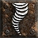

 Tornado 0.0% (0.0)
Popular builds include:
19.29% of Druid's invest heavily in Rabies, Summon Dire Wolf, Poison Creeper, Lycanthropy, Oak Sage
17.77% of Druid's invest heavily in Shock Wave, Werebear, Maul, Lycanthropy, Oak Sage
9.14% of Druid's invest heavily in Hurricane, Flame Dash, Molten Boulder, Tornado, Twister
9.14% of Druid's invest heavily in Summon Grizzly, Oak Sage, Summon Dire Wolf, Heart of Wolverine, Summon Spirit Wolf
7.61% of Druid's invest heavily in Flame Dash, Molten Boulder, Firestorm, Armageddon, Oak Sage
7.61% of Druid's invest heavily in Molten Boulder, Armageddon, Volcano, Fissure, Firestorm
7.11% of Druid's invest heavily in Summon Dire Wolf, Summon Grizzly, Summon Spirit Wolf, Heart of Wolverine, Poison Creeper
5.58% of Druid's invest heavily in Heart of Wolverine, Lycanthropy, Fury, Oak Sage, Werewolf
5.08% of Druid's invest heavily in Tornado, Hurricane, Twister, Cyclone Armor, Arctic Blast
4.06% of Druid's invest heavily in Maul, Lycanthropy, Shock Wave, Summon Dire Wolf, Summon Grizzly
3.55% of Druid's invest heavily in Summon Dire Wolf, Summon Grizzly, Rabies, Poison Creeper, Oak Sage
2.54% of Druid's invest heavily in Oak Sage, Summon Grizzly, Maul, Heart of Wolverine, Summon Spirit Wolf
1.02% of Druid's invest heavily in Raven, Cyclone Armor, Arctic Blast, Oak Sage, Twister
0.51% of Druid's invest heavily in Heart of Wolverine, Lycanthropy, Werebear, Maul, Summon Grizzly
Other Skills:
 Werewolf 100.0% (117.0)
Werewolf 100.0% (117.0) Feral Rage 100.0% (79.0)
Feral Rage 100.0% (79.0) Heart of Wolverine 100.0% (56.0)
Heart of Wolverine 100.0% (56.0) Summon Spirit Wolf 100.0% (44.0)
Summon Spirit Wolf 100.0% (44.0) Summon Grizzly 84.21% (42.0)
Summon Grizzly 84.21% (42.0) Raven 100.0% (38.0)
Raven 100.0% (38.0)
Skills: Poison Creeper:20, Oak Sage:20, Summon Dire Wolf:20, Rabies:20, Lycanthropy:10, Summon Spirit Wolf:7, Werewolf:2, Raven:1, Heart of Wolverine:1, Summon Grizzly:1, Feral Rage:1, Fury:1, Firestorm:1, Molten Boulder:1, Flame Dash:1
Equipment: belt: String of Ears x1, gloves: Trang-Oul's Claws x1, ring: Wraithra Turn x1, ring: Death Band x1, helmet: Metamorphosis x1, body: Arkaine's Valor x1, amulet: Communal Amulet of the Squid x1, boots: Aldur's Advance x1, Left hand: Spirit x1, Left hand: Stormshield x1, Offhand: Spirit x1, Offhand: Grief x1
Mercenary: Act 1 Rogue Scout - Tal Rasha's Horadric Crest, Hustle, Harmony
Skills: Poison Creeper:20, Summon Dire Wolf:20, Lycanthropy:20, Rabies:20, Feral Rage:17, Raven:1, Oak Sage:1, Summon Spirit Wolf:1, Carrion Vine:1, Heart of Wolverine:1, Solar Creeper:1, Summon Grizzly:1, Werewolf:1, Fury:1
Equipment: boots: Aldur's Advance x1, ring: Bul-Kathos' Wedding Band x1, ring: Wisp Projector x1, belt: M'avina's Tenet x1, gloves: Trang-Oul's Claws x1, body: Enigma x1, helmet: Jalal's Mane x1, amulet: Communal Amulet of Luck x1, Left hand: Plague x1, Left hand: Azurewrath x1, Offhand: Stormshield x2
Mercenary: Act 1 Rogue Scout - Vampire Gaze, Fortitude, Harmony
Skills: Poison Creeper:20, Summon Dire Wolf:20, Werewolf:20, Lycanthropy:20, Rabies:20, Raven:1, Oak Sage:1, Summon Spirit Wolf:1, Heart of Wolverine:1, Summon Grizzly:1, Feral Rage:1, Fury:1
Equipment: gloves: Trang-Oul's Claws x1, boots: War Traveler x1, belt: Thundergod's Vigor x1, amulet: Blood Beads x1, ring: Wisp Projector x1, ring: Corruption Turn x1, body: Chains of Honor x1, helmet: Metamorphosis x1, Left hand: Mang Song's Lesson x1, Left hand: Grief x1, Offhand: Stormshield x1
Mercenary: Act 1 Rogue Scout - Treachery, Tal Rasha's Horadric Crest, Harmony
Skills: Poison Creeper:20, Oak Sage:20, Summon Dire Wolf:20, Lycanthropy:20, Rabies:20, Raven:1, Summon Spirit Wolf:1, Heart of Wolverine:1, Summon Grizzly:1, Werewolf:1, Feral Rage:1
Equipment: gloves: Trang-Oul's Claws x1, belt: Nosferatu's Coil x1, helmet: Metamorphosis x1, amulet: Mara's Kaleidoscope x1, boots: Storm Nails x1, ring: The Stone of Jordan x1, ring: Wisp Projector x1, body: Enigma x1, Left hand: Grief x1, Offhand: Stormshield x1
Mercenary: Act 1 Rogue Scout - Andariel's Visage, Fortitude, Harmony
Skills: Poison Creeper:20, Oak Sage:20, Summon Dire Wolf:20, Rabies:20, Lycanthropy:17, Werewolf:2, Raven:1, Summon Spirit Wolf:1, Heart of Wolverine:1, Summon Grizzly:1, Feral Rage:1, Fury:1
Equipment: helmet: Metamorphosis x1, boots: Aldur's Advance x1, gloves: Trang-Oul's Claws x1, ring: Bitter Loop x1, ring: Raven Frost x1, belt: Verdungo's Hearty Cord x1, amulet: Mara's Kaleidoscope x1, body: The Gladiator's Bane x1, Left hand: Harmony x1, Left hand: Grief x1, Offhand: Stormshield x1
Mercenary: Act 5 Barbarian - No equipment
Skills: Poison Creeper:20, Summon Dire Wolf:20, Lycanthropy:20, Rabies:20, Oak Sage:18, Raven:1, Summon Spirit Wolf:1, Heart of Wolverine:1, Summon Grizzly:1, Werewolf:1, Feral Rage:1, Fury:1
Equipment: body: Arkaine's Valor x1, gloves: Trang-Oul's Claws x1, boots: Aldur's Advance x1, ring: Bone Finger x1, ring: Wisp Projector x1, amulet: Chaos Mark x1, helmet: Metamorphosis x1, belt: Goldwrap x1, Left hand: Edge x1, Left hand: Grief x1, Offhand: Spirit x1
Mercenary: Act 1 Rogue Scout - Treachery, Andariel's Visage, Harmony
Skills: Poison Creeper:20, Summon Dire Wolf:20, Lycanthropy:20, Rabies:20, Heart of Wolverine:14, Feral Rage:5, Raven:1, Oak Sage:1, Summon Spirit Wolf:1, Summon Grizzly:1, Werewolf:1, Fury:1
Equipment: ring: Raven Frost x1, ring: Eagle Coil x1, boots: Aldur's Advance x1, gloves: Trang-Oul's Claws x1, helmet: Metamorphosis x1, belt: Verdungo's Hearty Cord x1, body: Arkaine's Valor x1, Left hand: Carin Shard x1, Left hand: Grief x1, Offhand: Spirit x1, Offhand: Stormshield x1, amulet: Communal Amulet of Maiming x1
Mercenary: Act 1 Rogue Scout - Steel Shade, Treachery, Harmony
Skills: Poison Creeper:20, Oak Sage:20, Summon Dire Wolf:20, Rabies:20, Lycanthropy:18, Raven:1, Summon Spirit Wolf:1, Heart of Wolverine:1, Summon Grizzly:1, Werewolf:1, Feral Rage:1, Fury:1
Equipment: helmet: Metamorphosis x1, ring: Wisp Projector x1, ring: Storm Finger x1, amulet: Communal Amulet of Absorption x1, gloves: Trang-Oul's Claws x1, belt: String of Ears x1, boots: Aldur's Advance x1, body: Naj's Light Plate x1, Left hand: Demon Limb x1, Left hand: Grief x1, Offhand: Spirit x1, Offhand: Stormshield x1
Mercenary: Act 1 Rogue Scout - Tal Rasha's Horadric Crest, Tal Rasha's Guardianship, Harmony
Skills: Poison Creeper:20, Summon Dire Wolf:20, Lycanthropy:20, Rabies:20, Oak Sage:18, Raven:1, Summon Spirit Wolf:1, Heart of Wolverine:1, Summon Grizzly:1, Werewolf:1, Feral Rage:1
Equipment: amulet: Feral Amulet of the Ox x1, ring: Raven Frost x1, ring: Wisp Projector x1, helmet: Metamorphosis x1, gloves: Trang-Oul's Claws x1, belt: String of Ears x1, boots: Aldur's Advance x1, Left hand: Spirit x1, Left hand: Lightsabre x1, Offhand: Spirit x1, Offhand: Stormshield x1, body: Enigma x1
Mercenary: Act 1 Rogue Scout - Rockfleece, Harmony
Skills: Oak Sage:20, Summon Dire Wolf:20, Lycanthropy:20, Rabies:20, Poison Creeper:16, Heart of Wolverine:2, Raven:1, Summon Spirit Wolf:1, Summon Grizzly:1, Werewolf:1, Feral Rage:1
Equipment: ring: Manald Heal x1, ring: Raven Frost x1, helmet: Jalal's Mane x1, gloves: Trang-Oul's Claws x1, belt: String of Ears x1, body: Naj's Light Plate x1, boots: Bramble Brogues x1, amulet: Communal Amulet x1, Left hand: Grief x1, Offhand: Stormshield x1
Mercenary: Act 2 Desert Mercenary - Treachery, Vampire Gaze, Insight
Skills: Poison Creeper:20, Summon Dire Wolf:20, Lycanthropy:20, Rabies:20, Oak Sage:13, Feral Rage:4, Summon Grizzly:2, Raven:1, Summon Spirit Wolf:1, Heart of Wolverine:1, Werewolf:1
Equipment: boots: Gore Rider x1, amulet: Metalgrid x1, ring: Raven Frost x1, ring: Carrion Wind x1, Left hand: Demon Limb x1, Left hand: Grief x1, Offhand: Spirit x1, Offhand: Stormshield x1, helmet: Metamorphosis x1, body: Bramble x1, gloves: Trang-Oul's Claws x1, belt: Thundergod's Vigor x1
Mercenary: Act 1 Rogue Scout - No equipment
Skills: Poison Creeper:20, Oak Sage:20, Summon Dire Wolf:20, Rabies:20, Lycanthropy:13, Feral Rage:5, Raven:1, Summon Spirit Wolf:1, Heart of Wolverine:1, Summon Grizzly:1, Werewolf:1
Equipment: gloves: Trang-Oul's Claws x1, boots: Aldur's Advance x1, amulet: Seraph's Hymn x1, belt: String of Ears x1, body: Chains of Honor x1, helmet: Metamorphosis x1, ring: PlagueRI Coil x1, ring: Raven Frost x1, Left hand: Dark Clan Crusher x1, Left hand: Grief x1, Offhand: Spirit x2
Mercenary: Act 2 Desert Mercenary - Leviathan, Crown of Thieves, Tomb Reaver
Skills: Poison Creeper:20, Summon Dire Wolf:20, Lycanthropy:20, Rabies:20, Oak Sage:18, Raven:1, Summon Spirit Wolf:1, Heart of Wolverine:1, Werewolf:1, Feral Rage:1
Equipment: boots: Aldur's Advance x1, ring: Dwarf Star x1, ring: Raven Frost x1, amulet: Communal Amulet of Brilliance x1, belt: String of Ears x1, gloves: Trang-Oul's Claws x1, helmet: Metamorphosis x1, Left hand: Plague x1, Left hand: Grief x1, Offhand: Spirit x1, Offhand: Stormshield x1
Mercenary: Act 5 Barbarian - No equipment
Skills: Poison Creeper:20, Summon Dire Wolf:20, Lycanthropy:20, Rabies:20, Werewolf:14, Raven:1, Oak Sage:1, Summon Spirit Wolf:1, Heart of Wolverine:1, Summon Grizzly:1, Feral Rage:1, Fury:1
Equipment: amulet: Communal Amulet x1, helmet: Metamorphosis x1, boots: Aldur's Advance x1, belt: String of Ears x1, gloves: Dracul's Grasp x1, ring: Chaos Grip x1, ring: Bul-Kathos' Wedding Band x1, Offhand: Stormshield x2, Left hand: Grief x1
Mercenary: Act 1 Rogue Scout - No equipment
Skills: Poison Creeper:20, Summon Dire Wolf:20, Lycanthropy:20, Rabies:20, Oak Sage:11, Feral Rage:6, Raven:1, Summon Spirit Wolf:1, Heart of Wolverine:1, Summon Grizzly:1, Werewolf:1
Equipment: body: Rain x1, ring: Raven Frost x1, ring: Grim Eye x1, boots: Aldur's Advance x1, gloves: Trang-Oul's Claws x1, helmet: Metamorphosis x1, belt: Immortal King's Detail x1, Left hand: Heart of the Oak x1, Left hand: Azurewrath x1, amulet: Metalgrid x1, Offhand: Stormshield x1
Mercenary: Act 1 Rogue Scout - Vampire Gaze, Treachery, Harmony
Skills: Poison Creeper:20, Summon Dire Wolf:20, Lycanthropy:20, Rabies:20, Werewolf:8, Raven:1, Summon Spirit Wolf:1, Heart of Wolverine:1, Feral Rage:1
Equipment: boots: Aldur's Advance x1, belt: M'avina's Tenet x1, body: Tyrael's Might x1, amulet: The Cat's Eye x1, gloves: Trang-Oul's Claws x1
Mercenary: Act 3 Eastern Sorceror - No equipment
Skills: Poison Creeper:20, Summon Dire Wolf:20, Lycanthropy:20, Rabies:20, Oak Sage:14, Raven:1, Summon Spirit Wolf:1, Heart of Wolverine:1, Summon Grizzly:1, Werewolf:1, Feral Rage:1, Fury:1
Equipment: gloves: Trang-Oul's Claws x1, boots: Aldur's Advance x1, helmet: Metamorphosis x1, amulet: Mara's Kaleidoscope x1, belt: Verdungo's Hearty Cord x1, ring: Order Spiral x1, Left hand: Mang Song's Lesson x1, Left hand: Lightsabre x1, Offhand: Stormshield x1
Mercenary: Act 1 Rogue Scout - Stealskull, Harmony
Skills: Poison Creeper:20, Summon Dire Wolf:20, Rabies:20, Lycanthropy:10, Raven:1, Oak Sage:1, Summon Spirit Wolf:1, Heart of Wolverine:1, Summon Grizzly:1, Werewolf:1, Feral Rage:1, Fury:1
Equipment: gloves: Trang-Oul's Claws x1, boots: War Traveler x1, amulet: Highlord's Wrath x1, ring: Storm Grasp x1, ring: Dread Coil x1, helmet: Jalal's Mane x1, Left hand: Spirit x1, Offhand: Spirit x1, Offhand: Stormshield x1
Mercenary: Act 1 Rogue Scout - Crown of Thieves
Skills: Poison Creeper:20, Summon Dire Wolf:20, Lycanthropy:20, Rabies:20, Oak Sage:8, Feral Rage:3, Raven:1, Summon Spirit Wolf:1, Heart of Wolverine:1, Summon Grizzly:1, Werewolf:1, Firestorm:1, Molten Boulder:1, Flame Dash:1
Equipment: helmet: Metamorphosis x1, ring: Raven Frost x1, ring: GhoulRI Master x1, belt: String of Ears x1, boots: Gore Rider x1, amulet: Communal Amulet of Grim Ward x1, body: Fortitude x1, gloves: Trang-Oul's Claws x1, Left hand: Silence x1, Left hand: Grief x1, Offhand: Blackoak Shield x1, Offhand: Stormshield x1
Mercenary: Act 1 Rogue Scout - Duriel's Shell, Stealskull, Harmony
Skills: Poison Creeper:20, Werewolf:20, Lycanthropy:20, Rabies:20, Summon Dire Wolf:17, Raven:1, Summon Spirit Wolf:1, Heart of Wolverine:1, Feral Rage:1
Equipment: belt: Verdungo's Hearty Cord x1, boots: Gore Rider x1, amulet: Highlord's Wrath x1, body: Fortitude x1, ring: Raven Frost x1, gloves: Trang-Oul's Claws x1, helmet: Jalal's Mane x1, Left hand: Demon Limb x1, Left hand: Grief x1, Offhand: Medusa's Gaze x1
Mercenary: Act 2 Desert Mercenary - No equipment
Skills: Poison Creeper:20, Summon Dire Wolf:20, Lycanthropy:20, Rabies:20, Oak Sage:10, Feral Rage:5, Raven:1, Summon Spirit Wolf:1, Heart of Wolverine:1, Summon Grizzly:1, Werewolf:1
Equipment: boots: Aldur's Advance x1, belt: String of Ears x1, helmet: Metamorphosis x1, gloves: Trang-Oul's Claws x1, ring: Bul-Kathos' Wedding Band x2, amulet: Mara's Kaleidoscope x1, body: Naj's Light Plate x1, Left hand: Death's Web x1, Left hand: Grief x1, Offhand: Stormshield x2
Mercenary: Act 5 Barbarian - Steel Shade, Treachery, Lawbringer
Skills: Poison Creeper:20, Summon Dire Wolf:20, Lycanthropy:20, Rabies:20, Oak Sage:14, Raven:1, Summon Spirit Wolf:1, Heart of Wolverine:1, Summon Grizzly:1, Werewolf:1, Feral Rage:1
Equipment: helmet: Jalal's Mane x1, body: Treachery x1, ring: Rune Touch x1, ring: Raven Frost x1, gloves: Trang-Oul's Claws x1, Left hand: Serpent Lord x1, Left hand: Cranebeak x1, belt: Verdungo's Hearty Cord x1, boots: War Traveler x1, amulet: Saracen's Chance x1, Offhand: Stormshield x1
Mercenary: Act 2 Desert Mercenary - Harlequin Crest, Corpsemourn, Bonehew
Skills: Poison Creeper:20, Summon Dire Wolf:20, Lycanthropy:20, Rabies:20, Raven:1, Oak Sage:1, Summon Spirit Wolf:1, Heart of Wolverine:1, Werewolf:1, Feral Rage:1
Equipment: belt: Thundergod's Vigor x1, helmet: Metamorphosis x1, gloves: Trang-Oul's Claws x1, Left hand: Spirit x1, Left hand: Grief x1, Offhand: Spirit x1, Offhand: Stormshield x1
Mercenary: Act 1 Rogue Scout - Hustle, Hearth, Harmony
Skills: Poison Creeper:20, Summon Dire Wolf:20, Lycanthropy:20, Rabies:20, Oak Sage:14, Raven:1, Summon Spirit Wolf:1, Heart of Wolverine:1, Summon Grizzly:1, Werewolf:1, Feral Rage:1
Equipment: belt: String of Ears x1, helmet: Metamorphosis x1, amulet: Communal Amulet of the Vampire x1, gloves: Trang-Oul's Claws x1, boots: Aldur's Advance x1, ring: Raven Frost x1, ring: Carrion Wind x1, body: Bramble x1, Left hand: Spirit x1, Left hand: Grief x1, Offhand: Medusa's Gaze x1, Offhand: Stormshield x1
Mercenary: Act 5 Barbarian - Steel Shade, Smoke, Lawbringer
Skills: Poison Creeper:20, Summon Dire Wolf:20, Lycanthropy:20, Rabies:20, Oak Sage:13, Raven:1, Summon Spirit Wolf:1, Heart of Wolverine:1, Spirit of Barbs:1, Summon Grizzly:1, Werewolf:1, Feral Rage:1
Equipment: belt: Verdungo's Hearty Cord x1, ring: Dwarf Star x1, ring: Entropy Band x1, boots: Aldur's Advance x1, body: Aldur's Deception x1, amulet: The Cat's Eye x1, gloves: Laying of Hands x1, helmet: Aldur's Stony Gaze x1, Left hand: Great Sword x1, Left hand: Aldur's Rhythm x1, Offhand: Stormshield x1
Mercenary: Act 2 Desert Mercenary - War Hat, Smoke, Bonehew
Skills: Poison Creeper:20, Summon Dire Wolf:20, Lycanthropy:20, Rabies:20, Fury:14, Raven:1, Summon Spirit Wolf:1, Heart of Wolverine:1, Summon Grizzly:1, Werewolf:1, Feral Rage:1
Equipment: helmet: Metamorphosis x1, boots: Gore Rider x1, ring: Raven Frost x1, ring: Wraithra Spiral x1, belt: String of Ears x1, amulet: Communal Amulet of Flame x1, gloves: Trang-Oul's Claws x1, body: Naj's Light Plate x1, Left hand: Spirit x1, Left hand: Grief x1, Offhand: Sigon's Guard x1, Offhand: Stormshield x1
Mercenary: Act 1 Rogue Scout - No equipment
Skills: Poison Creeper:20, Summon Dire Wolf:20, Lycanthropy:20, Rabies:20, Oak Sage:13, Raven:1, Summon Spirit Wolf:1, Heart of Wolverine:1, Summon Grizzly:1, Werewolf:1, Feral Rage:1
Equipment: gloves: Trang-Oul's Claws x1, boots: War Traveler x1, amulet: Communal Amulet x1, belt: String of Ears x1, ring: Entropy Master x1, ring: Raven Frost x1, body: Enigma x1, helmet: Jalal's Mane x1, Left hand: Howling Gnarled Staff of Teleportation x1, Left hand: Plague Bearer x1, Offhand: Stormshield x1
Mercenary: Act 2 Desert Mercenary - Vampire Gaze, Guardian Angel, Plague
Skills: Poison Creeper:20, Summon Dire Wolf:20, Werewolf:20, Rabies:20, Lycanthropy:6, Summon Grizzly:2, Raven:1, Oak Sage:1, Summon Spirit Wolf:1, Carrion Vine:1, Heart of Wolverine:1, Spirit of Barbs:1, Werebear:1, Feral Rage:1, Maul:1
Equipment: belt: Verdungo's Hearty Cord x1, ring: Bone Turn x1, ring: Scintillating Ring of Wizardry x1, body: Smoke x1, boots: Aldur's Advance x1, gloves: Trang-Oul's Claws x1, helmet: Metamorphosis x1, Left hand: Crescent Moon x1, Left hand: Death's Web x1, Offhand: Rhyme x1, Offhand: Stormshield x1, amulet: Communal Amulet x1
Mercenary: Act 3 Eastern Sorceror - Twitchthroe, Natalya's Totem, Lightsabre, The Ward
Skills: Poison Creeper:20, Summon Dire Wolf:20, Lycanthropy:20, Rabies:20, Oak Sage:10, Feral Rage:2, Raven:1, Summon Spirit Wolf:1, Carrion Vine:1, Heart of Wolverine:1, Summon Grizzly:1, Werewolf:1, Fury:1
Equipment: boots: Natalya's Soul x1, gloves: Trang-Oul's Claws x1, amulet: Mara's Kaleidoscope x1, ring: Havoc Spiral x1, ring: Grim Grasp x1, body: Naj's Light Plate x1, helmet: Harlequin Crest x1, belt: String of Ears x1, Left hand: Battle Staff of Teleportation x1, Left hand: Azurewrath x1, Offhand: Spirit x1
Mercenary: Act 2 Desert Mercenary - Leviathan, Vampire Gaze, Obedience
Skills: Summon Dire Wolf:20, Lycanthropy:20, Rabies:20, Poison Creeper:15, Oak Sage:14, Feral Rage:3, Raven:1, Summon Spirit Wolf:1, Carrion Vine:1, Heart of Wolverine:1, Summon Grizzly:1, Werewolf:1
Equipment: helmet: Jalal's Mane x1, amulet: Mara's Kaleidoscope x1, boots: Goblin Toe x1, Left hand: Spirit x1, Left hand: Grief x1, Offhand: Spirit x1, Offhand: Rhyme x1, belt: M'avina's Tenet x1, body: Leviathan x1, gloves: Trang-Oul's Claws x1, ring: Raven Whorl x1, ring: Eagle Touch x1
Mercenary: Act 1 Rogue Scout - Treachery, Crown of Thieves, Harmony
Skills: Poison Creeper:20, Oak Sage:20, Summon Dire Wolf:20, Rabies:20, Lycanthropy:12, Raven:1, Summon Spirit Wolf:1, Heart of Wolverine:1, Summon Grizzly:1, Werewolf:1, Feral Rage:1
Equipment: ring: Raven Frost x1, ring: Bul-Kathos' Wedding Band x1, amulet: Raven Eye x1, boots: Gore Rider x1, gloves: Trang-Oul's Claws x1, helmet: Jalal's Mane x1, belt: String of Ears x1, body: Bramble x1, Left hand: Spirit x1, Left hand: Grief x1, Offhand: Spirit x1, Offhand: Stormshield x1
Mercenary: Act 3 Eastern Sorceror - Peasant Crown, Tal Rasha's Guardianship, Spirit, Spirit
Skills: Poison Creeper:20, Summon Dire Wolf:20, Lycanthropy:20, Rabies:20, Summon Grizzly:9, Oak Sage:4, Raven:1, Summon Spirit Wolf:1, Heart of Wolverine:1, Werewolf:1, Feral Rage:1
Equipment: helmet: Jalal's Mane x1, boots: Aldur's Advance x1, amulet: Bone Scarab x1, body: Rain x1, gloves: Trang-Oul's Claws x1, Left hand: Lightsabre x1, Left hand: Plague Bearer x1, Offhand: Spirit x1, Offhand: Stormshield x1, belt: String of Ears x1, ring: Carrion Wind x1, ring: Wraithra Finger x1
Mercenary: Act 1 Rogue Scout - Treachery, Tal Rasha's Horadric Crest, Harmony
Skills: Poison Creeper:20, Oak Sage:20, Summon Dire Wolf:20, Rabies:20, Lycanthropy:11, Raven:1, Summon Spirit Wolf:1, Heart of Wolverine:1, Werewolf:1, Feral Rage:1, Fury:1
Equipment: gloves: Trang-Oul's Claws x1, Offhand: The Ward x1, belt: Nosferatu's Coil x1, helmet: Jalal's Mane x1, amulet: Communal Amulet of Wealth x1, Left hand: Guardian Naga x1
Mercenary: Act 1 Rogue Scout - Tal Rasha's Horadric Crest, Hustle, Harmony
Skills: Poison Creeper:20, Summon Dire Wolf:20, Lycanthropy:20, Rabies:20, Oak Sage:8, Raven:1, Summon Spirit Wolf:1, Carrion Vine:1, Heart of Wolverine:1, Summon Grizzly:1, Werewolf:1, Feral Rage:1
Equipment: helmet: Jalal's Mane x1, amulet: Chaos Clasp x1, ring: Dread Knot x1, ring: Raven Frost x1, Left hand: Plague Bearer x1, Offhand: Spirit x1
Mercenary: Act 3 Eastern Sorceror - Lore, Spirit, Tiamat's Rebuke
Skills: Poison Creeper:20, Summon Dire Wolf:20, Lycanthropy:20, Rabies:20, Oak Sage:10, Raven:1, Summon Spirit Wolf:1, Heart of Wolverine:1, Summon Grizzly:1, Werewolf:1, Feral Rage:1
Equipment: helmet: Jalal's Mane x1, amulet: Atma's Scarab x1, belt: Credendum x1, boots: Aldur's Advance x1, gloves: Trang-Oul's Claws x1, ring: Raven Frost x1, ring: Carrion Wind x1, body: Guardian Angel x1, Left hand: Lightsabre x1, Offhand: Stormshield x1
Mercenary: Act 5 Barbarian - Treachery, Tal Rasha's Horadric Crest, Lawbringer
Skills: Poison Creeper:20, Summon Dire Wolf:20, Lycanthropy:20, Rabies:20, Heart of Wolverine:5, Fury:4, Raven:1, Oak Sage:1, Summon Spirit Wolf:1, Summon Grizzly:1, Werewolf:1, Feral Rage:1
Equipment: boots: Aldur's Advance x1, gloves: Trang-Oul's Claws x1, ring: Manald Heal x1, amulet: Keeper's Amulet of the Jackal x1, helmet: Jalal's Mane x1, body: Smoke x1, Left hand: Grief x1, Offhand: Spirit x1
Mercenary: Act 2 Desert Mercenary - Godly Field Plate of Absorption, Great Helm of Nova Shield, Pike of Swiftness
Skills: Poison Creeper:20, Summon Dire Wolf:20, Lycanthropy:20, Rabies:20, Oak Sage:6, Raven:1, Summon Spirit Wolf:1, Heart of Wolverine:1, Summon Grizzly:1, Werewolf:1, Feral Rage:1
Equipment: ring: Havoc Loop x1, ring: Havoc Touch x1, amulet: Shaman's Amulet x1, helmet: Jalal's Mane x1, belt: String of Ears x1, boots: Vidala's Fetlock x1, gloves: Trang-Oul's Claws x1, body: Rain x1, Left hand: Spirit x1, Offhand: Stormshield x1
Mercenary: Act 1 Rogue Scout - Darksight Helm, Boneflesh, Harmony
Skills: Poison Creeper:20, Summon Dire Wolf:20, Lycanthropy:20, Rabies:20, Oak Sage:9, Raven:1, Summon Spirit Wolf:1, Heart of Wolverine:1, Werewolf:1, Feral Rage:1
Equipment: helmet: 2693 x1, gloves: Bloodfist x1, ring: Manald Heal x1, ring: Angelic Halo x1, boots: Natalya's Soul x1, belt: Immortal King's Detail x1, body: Smoke x1, amulet: Bone Talisman x1, Left hand: Spirit x1, Offhand: Spirit x1
Mercenary: Act 1 Rogue Scout - Steel Shade, Atma's Wail, Dread Flight
Other Skills:
 Heart of Wolverine 100.0% (155.0)
Heart of Wolverine 100.0% (155.0) Summon Dire Wolf 85.71% (122.0)
Summon Dire Wolf 85.71% (122.0) Summon Grizzly 85.71% (50.0)
Summon Grizzly 85.71% (50.0) Summon Spirit Wolf 85.71% (38.0)
Summon Spirit Wolf 85.71% (38.0) Werewolf 100.0% (35.0)
Werewolf 100.0% (35.0) Raven 85.71% (30.0)
Raven 85.71% (30.0)
Skills: Lycanthropy:20, Werebear:20, Maul:20, Shock Wave:20, Oak Sage:15, Summon Dire Wolf:3, Raven:1, Summon Spirit Wolf:1, Heart of Wolverine:1, Summon Grizzly:1, Werewolf:1
Equipment: gloves: Dracul's Grasp x1, boots: Gore Rider x1, amulet: Communal Amulet x1, helmet: Jalal's Mane x1, belt: Arachnid Mesh x1, ring: Eagle Coil x1, ring: Eagle Turn x1, body: Fortitude x1, Left hand: Mang Song's Lesson x1, Left hand: Headstriker x1, Offhand: Stormshield x1
Mercenary: Act 2 Desert Mercenary - The Reaper's Toll
Skills: Lycanthropy:20, Werebear:20, Maul:20, Shock Wave:20, Oak Sage:9, Heart of Wolverine:3, Summon Dire Wolf:3, Raven:1, Summon Spirit Wolf:1, Spirit of Barbs:1, Summon Grizzly:1, Werewolf:1, Arctic Blast:1, Cyclone Armor:1
Equipment: helmet: Jalal's Mane x1, boots: Gore Rider x1, amulet: Communal Amulet of Strength x1, belt: Arachnid Mesh x1, body: Fortitude x1, gloves: Laying of Hands x1, ring: Manald Heal x1, ring: Rune Grasp x1, Left hand: Lawbringer x1, Left hand: Headstriker x1, Offhand: Stormshield x1, Offhand: Spirit x1
Mercenary: Act 2 Desert Mercenary - Fortitude, Andariel's Visage, Tomb Reaver
Skills: Maul:20, Shock Wave:20, Oak Sage:16, Werebear:13, Heart of Wolverine:10, Summon Spirit Wolf:7, Lycanthropy:7, Summon Dire Wolf:3, Raven:1, Poison Creeper:1, Carrion Vine:1, Solar Creeper:1, Summon Grizzly:1, Werewolf:1
Equipment: body: Fortitude x1, helmet: Jalal's Mane x1, amulet: Skull Beads x1, gloves: Soul Drainer x1, boots: Storm Tread x1, belt: String of Ears x1, ring: Storm Coil x1, ring: Raven Frost x1, Left hand: Spirit x1, Left hand: Buriza-Do Kyanon x1, Offhand: Spirit x1, Offhand: Eagle Eye x1
Mercenary: Act 5 Barbarian - The Gladiator's Bane, Arreat's Face, The Grandfather
Skills: Lycanthropy:20, Werebear:20, Maul:20, Shock Wave:20, Heart of Wolverine:14, Raven:1, Oak Sage:1, Summon Spirit Wolf:1, Summon Dire Wolf:1, Summon Grizzly:1, Werewolf:1, Arctic Blast:1, Cyclone Armor:1
Equipment: helmet: Jalal's Mane x1, amulet: Communal Amulet of the Wraith x1, gloves: Dracul's Grasp x1, ring: Bul-Kathos' Wedding Band x2, belt: Arachnid Mesh x1, boots: Gore Rider x1, body: Fortitude x1, Left hand: Mang Song's Lesson x1, Left hand: Headstriker x1, Offhand: Spirit x1
Mercenary: Act 2 Desert Mercenary - No equipment
Skills: Lycanthropy:20, Werebear:20, Maul:20, Shock Wave:20, Summon Grizzly:15, Raven:1, Oak Sage:1, Summon Spirit Wolf:1, Heart of Wolverine:1, Summon Dire Wolf:1, Werewolf:1
Equipment: boots: Gore Rider x1, belt: Arachnid Mesh x1, amulet: Highlord's Wrath x1, gloves: Dracul's Grasp x1, helmet: Jalal's Mane x1, ring: Raven Knot x1, ring: Bitter Loop x1, body: Fortitude x1, Left hand: Call to Arms x1, Left hand: Headstriker x1, Offhand: Spirit x2
Mercenary: Act 5 Barbarian - No equipment
Skills: Lycanthropy:20, Werebear:20, Maul:20, Shock Wave:20, Oak Sage:14, Heart of Wolverine:2, Raven:1, Summon Spirit Wolf:1, Summon Dire Wolf:1, Summon Grizzly:1, Werewolf:1
Equipment: gloves: Dracul's Grasp x1, belt: String of Ears x1, amulet: Grim Talisman x1, helmet: Jalal's Mane x1, Left hand: Call to Arms x1, Left hand: Headstriker x1, Offhand: Spirit x2, body: Fortitude x1, boots: Gore Rider x1
Mercenary: Act 5 Barbarian - Steel Shade, Treachery, Lawbringer
Skills: Lycanthropy:20, Werebear:20, Maul:20, Shock Wave:20, Heart of Wolverine:12, Raven:1, Oak Sage:1, Summon Spirit Wolf:1, Summon Dire Wolf:1, Summon Grizzly:1, Werewolf:1, Firestorm:1, Molten Boulder:1, Flame Dash:1
Equipment: helmet: Jalal's Mane x1, gloves: Dracul's Grasp x1, belt: Arachnid Mesh x1, ring: Raven Frost x1, ring: Rune Spiral x1, amulet: Death Clasp x1, boots: Gore Rider x1, body: Fortitude x1, Left hand: Mang Song's Lesson x1, Left hand: Headstriker x1, Offhand: Spirit x1
Mercenary: Act 1 Rogue Scout - No equipment
Skills: Lycanthropy:20, Werebear:20, Maul:20, Shock Wave:20, Summon Dire Wolf:14, Raven:1, Oak Sage:1, Summon Spirit Wolf:1, Heart of Wolverine:1, Summon Grizzly:1, Werewolf:1
Equipment: helmet: Jalal's Mane x1, boots: Gore Rider x1, body: Fortitude x1, amulet: Mara's Kaleidoscope x1, ring: Order Band x1, ring: Manald Heal x1, gloves: Dracul's Grasp x1, belt: Arachnid Mesh x1, Left hand: Islestrike x1, Left hand: Headstriker x1, Offhand: Spirit x2
Mercenary: Act 1 Rogue Scout - Fortitude, Harlequin Crest, Buriza-Do Kyanon
Skills: Lycanthropy:20, Werebear:20, Maul:20, Shock Wave:20, Heart of Wolverine:19, Oak Sage:1, Werewolf:1
Equipment: helmet: Jalal's Mane x1, ring: PlagueRI Whorl x1, ring: Nature's Peace x1, boots: Gore Rider x1, body: Skin of the Vipermagi x1, belt: String of Ears x1, gloves: Dracul's Grasp x1, Left hand: Mang Song's Lesson x1, Left hand: Ume's Lament x1, amulet: Highlord's Wrath x1, Offhand: Stormshield x1
Mercenary: Act 2 Desert Mercenary - Hustle, Jeweler's Diadem of Speed, Insight
Skills: Lycanthropy:20, Werebear:20, Maul:20, Shock Wave:20, Oak Sage:15, Raven:1, Summon Spirit Wolf:1, Heart of Wolverine:1, Summon Dire Wolf:1, Summon Grizzly:1, Werewolf:1
Equipment: belt: Arachnid Mesh x1, boots: Gore Rider x1, gloves: Dracul's Grasp x1, helmet: Jalal's Mane x1, ring: GhoulRI Band x1, ring: Stone Band x1, amulet: Communal Amulet of the Vampire x1, Left hand: Mang Song's Lesson x1, Left hand: Headstriker x1, body: Fortitude x1, Offhand: Stormshield x1
Mercenary: Act 1 Rogue Scout - Vampire Gaze, Treachery, Harmony
Skills: Lycanthropy:20, Werebear:20, Maul:20, Shock Wave:20, Summon Dire Wolf:13, Summon Spirit Wolf:3, Raven:1, Oak Sage:1, Heart of Wolverine:1, Summon Grizzly:1, Werewolf:1
Equipment: ring: Death Coil x1, ring: Blood Hold x1, helmet: Metamorphosis x1, amulet: Communal Amulet x1, belt: Arachnid Mesh x1, boots: Aldur's Advance x1, gloves: Ghoulhide x1, body: Fortitude x1, Left hand: Fleshrender x1, Left hand: Headstriker x1, Offhand: Spirit x2
Mercenary: Act 5 Barbarian - Vampire Gaze, Treachery, Lawbringer
Skills: Lycanthropy:20, Werebear:20, Maul:20, Shock Wave:20, Summon Dire Wolf:15, Raven:1, Oak Sage:1, Summon Spirit Wolf:1, Heart of Wolverine:1, Summon Grizzly:1, Werewolf:1
Equipment: boots: Aldur's Advance x1, ring: Raven Finger x1, ring: Skull Band x1, helmet: Metamorphosis x1, amulet: Viper Emblem x1, belt: String of Ears x1, Left hand: Harmony x1, Left hand: Headstriker x1, body: Fortitude x1, gloves: Laying of Hands x1, Offhand: Spirit x1
Mercenary: Act 5 Barbarian - Leviathan, Tal Rasha's Horadric Crest, Lawbringer
Skills: Lycanthropy:20, Werebear:20, Maul:20, Shock Wave:20, Summon Dire Wolf:14, Raven:1, Oak Sage:1, Summon Spirit Wolf:1, Heart of Wolverine:1, Summon Grizzly:1, Werewolf:1
Equipment: helmet: Metamorphosis x1, boots: Aldur's Advance x1, amulet: GhoulRI Mark x1, gloves: Dracul's Grasp x1, body: Treachery x1, ring: GhoulRI Loop x1, ring: Dwarf Star x1, Left hand: Heart of the Oak x1, Left hand: Headstriker x1, Offhand: Spirit x2, belt: Verdungo's Hearty Cord x1
Mercenary: Act 5 Barbarian - Natalya's Totem, Fortitude, Lawbringer
Skills: Lycanthropy:20, Werebear:20, Maul:20, Shock Wave:20, Summon Dire Wolf:14, Raven:1, Oak Sage:1, Summon Spirit Wolf:1, Heart of Wolverine:1, Summon Grizzly:1, Werewolf:1
Equipment: belt: Arachnid Mesh x1, boots: Gore Rider x1, ring: PlagueRI Hold x1, ring: Raven Frost x1, body: Fortitude x1, gloves: Dracul's Grasp x1, amulet: Grim Emblem x1, helmet: Jalal's Mane x1, Left hand: Spirit x1, Left hand: Headstriker x1, Offhand: Spirit x1, Offhand: Stormshield x1
Mercenary: Act 2 Desert Mercenary - No equipment
Skills: Lycanthropy:20, Werebear:20, Maul:20, Shock Wave:20, Heart of Wolverine:13, Raven:1, Oak Sage:1, Summon Spirit Wolf:1, Summon Dire Wolf:1, Summon Grizzly:1, Werewolf:1
Equipment: helmet: Jalal's Mane x1, gloves: Dracul's Grasp x1, body: Fortitude x1, ring: Storm Gyre x1, ring: Wisp Projector x1, amulet: Highlord's Wrath x1, belt: Trang-Oul's Girth x1, boots: Gore Rider x1, Offhand: Spirit x2, Left hand: Fleshripper x1
Mercenary: Act 1 Rogue Scout - Treachery, Tal Rasha's Horadric Crest, Harmony
Skills: Lycanthropy:20, Werebear:20, Maul:20, Shock Wave:20, Oak Sage:8, Heart of Wolverine:5, Raven:1, Summon Spirit Wolf:1, Summon Dire Wolf:1, Summon Grizzly:1, Werewolf:1
Equipment: ring: Stone Whorl x1, ring: Beast Touch x1, helmet: Jalal's Mane x1, body: Fortitude x1, amulet: Communal Amulet of the Colossus x1, gloves: Laying of Hands x1, boots: Gore Rider x1, belt: Arachnid Mesh x1, Left hand: Headstriker x1, Left hand: Harmony x1, Offhand: Spirit x1
Mercenary: Act 2 Desert Mercenary - Tal Rasha's Horadric Crest, Shaftstop, The Reaper's Toll
Skills: Lycanthropy:20, Werebear:20, Maul:20, Shock Wave:20, Oak Sage:10, Raven:1, Poison Creeper:1, Summon Spirit Wolf:1, Heart of Wolverine:1, Summon Dire Wolf:1, Summon Grizzly:1, Werewolf:1, Arctic Blast:1, Cyclone Armor:1
Equipment: ring: Manald Heal x1, ring: Entropy Spiral x1, gloves: Trang-Oul's Claws x1, amulet: Seraph's Hymn x1, helmet: Jalal's Mane x1, boots: Gore Rider x1, belt: Credendum x1, Left hand: Fleshrender x1, Left hand: Headstriker x1, Offhand: Lidless Wall x1, Offhand: Spirit x1
Mercenary: Act 3 Eastern Sorceror - Stealth, Tal Rasha's Horadric Crest, Azurewrath, Rhyme
Skills: Lycanthropy:20, Werebear:20, Maul:20, Shock Wave:20, Oak Sage:15, Heart of Wolverine:1, Werewolf:1
Equipment: Left hand: Fleshrender x1, Offhand: Spirit x1, boots: Viper Slippers x1, gloves: Kenshi's Chain Gloves of Alacrity x1, amulet: Highlord's Wrath x1, ring: Carrion Wind x1, body: Rain x1
Mercenary: Act 1 Rogue Scout - No equipment
Skills: Lycanthropy:20, Werebear:20, Maul:20, Shock Wave:20, Oak Sage:10, Heart of Wolverine:8, Werewolf:1
Equipment: belt: Bone Winding x1, gloves: Trang-Oul's Claws x1, ring: Doom Eye x1, amulet: Blood Heart x1, body: Que-Hegan's Wisdom x1, helmet: Jalal's Mane x1, Left hand: Headstriker x1, Offhand: Spirit x1
Mercenary: Act 5 Barbarian - No equipment
Skills: Lycanthropy:20, Werebear:20, Maul:20, Shock Wave:20, Oak Sage:9, Raven:1, Poison Creeper:1, Summon Spirit Wolf:1, Carrion Vine:1, Heart of Wolverine:1, Summon Dire Wolf:1, Solar Creeper:1, Spirit of Barbs:1, Summon Grizzly:1, Werewolf:1
Equipment: body: Fortitude x1, boots: Gore Rider x1, ring: Dread Finger x1, ring: Raven Frost x1, gloves: Laying of Hands x1, amulet: Skull Heart x1, belt: String of Ears x1, Left hand: Harmony x1, Left hand: Headstriker x1, helmet: Jalal's Mane x1, Offhand: Stormshield x1
Mercenary: Act 2 Desert Mercenary - No equipment
Skills: Lycanthropy:20, Werebear:20, Maul:20, Shock Wave:20, Oak Sage:12, Raven:1, Summon Spirit Wolf:1, Heart of Wolverine:1, Summon Dire Wolf:1, Summon Grizzly:1, Werewolf:1
Equipment: Offhand: Spirit x1
Mercenary: Act 1 Rogue Scout - No equipment
Skills: Heart of Wolverine:20, Werebear:20, Maul:20, Shock Wave:20, Lycanthropy:11, Raven:1, Oak Sage:1, Summon Spirit Wolf:1, Summon Dire Wolf:1, Spirit of Barbs:1, Summon Grizzly:1, Werewolf:1
Equipment: ring: GhoulRI Whorl x1, ring: PlagueRI Eye x1, helmet: Jalal's Mane x1, boots: Aldur's Advance x1, belt: Goldwrap x1, amulet: Communal Amulet x1, gloves: Magefist x1, Left hand: Jade Battle Staff of Teleportation x1, Left hand: Headstriker x1, body: Duriel's Shell x1, Offhand: Spirit x1
Mercenary: Act 5 Barbarian - Mesh Armor, Tal Rasha's Horadric Crest, Lawbringer
Skills: Lycanthropy:20, Werebear:20, Maul:20, Shock Wave:20, Oak Sage:12, Raven:1, Summon Spirit Wolf:1, Heart of Wolverine:1, Summon Dire Wolf:1, Summon Grizzly:1, Werewolf:1
Equipment: ring: GhoulRI Grip x1, ring: Rune Band x1, boots: Gore Rider x1, belt: String of Ears x1, helmet: Jalal's Mane x1, body: Fortitude x1, gloves: Dracul's Grasp x1, Left hand: Holy Thunder x1, Left hand: Headstriker x1, amulet: Communal Amulet of the Whale x1, Offhand: Spirit x1
Mercenary: Act 1 Rogue Scout - No equipment
Skills: Lycanthropy:20, Werebear:20, Shock Wave:20, Maul:11, Oak Sage:7, Heart of Wolverine:5, Raven:1, Poison Creeper:1, Summon Spirit Wolf:1, Carrion Vine:1, Summon Dire Wolf:1, Solar Creeper:1, Spirit of Barbs:1, Summon Grizzly:1, Werewolf:1, Feral Rage:1, Fire Claws:1
Equipment: gloves: Storm Hold x1, boots: Tearhaunch x1, helmet: Giant Skull x1, belt: Credendum x1, amulet: The Cat's Eye x1, body: Smoke x1, ring: Storm Gyre x1, ring: Wraithra Gyre x1, Left hand: Demon Limb x1, Offhand: Spirit x1
Mercenary: Act 1 Rogue Scout - No equipment
Skills: Lycanthropy:20, Werebear:20, Maul:20, Shock Wave:20, Summon Dire Wolf:10, Oak Sage:2, Raven:1, Summon Spirit Wolf:1, Heart of Wolverine:1, Summon Grizzly:1, Werewolf:1
Equipment: gloves: Dracul's Grasp x1, amulet: GhoulRI Emblem x1, helmet: Jalal's Mane x1, ring: Bul-Kathos' Wedding Band x1, ring: Raven Frost x1, belt: Arachnid Mesh x1, body: Fortitude x1, boots: Gore Rider x1, Left hand: Headstriker x1, Offhand: Spirit x1
Mercenary: Act 1 Rogue Scout - Twitchthroe, Tal Rasha's Horadric Crest, Harmony
Skills: Lycanthropy:20, Werebear:20, Maul:20, Shock Wave:20, Oak Sage:11, Raven:1, Summon Spirit Wolf:1, Heart of Wolverine:1, Summon Dire Wolf:1, Summon Grizzly:1, Werewolf:1
Equipment: boots: Aldur's Advance x1, body: Fortitude x1, amulet: Rune Necklace x1, helmet: Metamorphosis x1, ring: Beast Spiral x1, ring: Bone Finger x1, belt: Arachnid Mesh x1, gloves: Steelrend x1, Left hand: Mang Song's Lesson x1, Left hand: Headstriker x1, Offhand: Stormshield x1
Mercenary: Act 5 Barbarian - Vampire Gaze, Fortitude, Lawbringer
Skills: Lycanthropy:20, Werebear:20, Maul:20, Shock Wave:20, Oak Sage:3, Raven:1, Summon Spirit Wolf:1, Heart of Wolverine:1, Summon Dire Wolf:1, Summon Grizzly:1, Werewolf:1
Equipment: gloves: Dracul's Grasp x1, boots: Gore Rider x1, helmet: Jalal's Mane x1, ring: Wisp Projector x1, ring: Raven Gyre x1, belt: Thundergod's Vigor x1, body: Guardian Angel x1, amulet: Communal Amulet of Absorption x1, Left hand: Heart of the Oak x1, Left hand: Headstriker x1, Offhand: Spirit x2
Mercenary: Act 5 Barbarian - Treachery, Tal Rasha's Horadric Crest, Lawbringer
Skills: Lycanthropy:20, Werebear:20, Maul:20, Shock Wave:20, Oak Sage:11, Raven:1, Summon Spirit Wolf:1, Heart of Wolverine:1, Summon Dire Wolf:1, Summon Grizzly:1, Werewolf:1
Equipment: ring: Stone Turn x1, ring: Viper Touch x1, boots: Gore Rider x1, gloves: Dracul's Grasp x1, belt: Arachnid Mesh x1, amulet: Corruption Wing x1, helmet: Jalal's Mane x1, body: Fortitude x1, Left hand: Spirit x1, Left hand: Headstriker x1, Offhand: Spirit x1, Offhand: Stormshield x1
Mercenary: Act 1 Rogue Scout - No equipment
Skills: Lycanthropy:20, Werebear:20, Maul:20, Shock Wave:20, Summon Grizzly:6, Summon Dire Wolf:5, Raven:1, Oak Sage:1, Summon Spirit Wolf:1, Heart of Wolverine:1, Werewolf:1
Equipment: body: Fortitude x1, helmet: Jalal's Mane x1, boots: Gore Rider x1, gloves: Laying of Hands x1, amulet: Communal Amulet x1, ring: Raven Frost x1, belt: String of Ears x1, Left hand: Fleshrender x1, Offhand: Spirit x1
Mercenary: Act 2 Desert Mercenary - No equipment
Skills: Lycanthropy:20, Werebear:20, Maul:20, Shock Wave:20, Raven:1, Summon Spirit Wolf:1, Heart of Wolverine:1, Summon Dire Wolf:1, Summon Grizzly:1, Werewolf:1
Equipment: boots: Gore Rider x1, helmet: Jalal's Mane x1, ring: Chaos Whorl x1, ring: Dread Circle x1, belt: Arachnid Mesh x1, gloves: Laying of Hands x1, amulet: Mara's Kaleidoscope x1, body: Fortitude x1, Left hand: Battle Staff of Teleportation x1, Left hand: Fleshrender x1, Offhand: Spirit x1
Mercenary: Act 2 Desert Mercenary - The Gladiator's Bane, Vampire Gaze, The Reaper's Toll
Skills: Lycanthropy:20, Werebear:20, Maul:20, Shock Wave:20, Oak Sage:14, Heart of Wolverine:1, Werewolf:1
Equipment: boots: Gore Rider x1, ring: Skull Touch x1, ring: Bul-Kathos' Wedding Band x1, helmet: Jalal's Mane x1, Left hand: Heart of the Oak x1, Left hand: Headstriker x1, Offhand: Spirit x2, body: Fortitude x1, gloves: Dracul's Grasp x1, amulet: Rune Gorget x1, belt: Arachnid Mesh x1
Mercenary: Act 1 Rogue Scout - No equipment
Skills: Lycanthropy:20, Werebear:20, Maul:20, Shock Wave:20, Heart of Wolverine:14, Werewolf:1
Equipment: ring: Eagle Finger x1, ring: Eagle Band x1, helmet: Metamorphosis x1, gloves: Laying of Hands x1, amulet: Communal Amulet of Life Everlasting x1, body: Fortitude x1, boots: Aldur's Advance x1, Left hand: Headstriker x1, Offhand: Spirit x1
Mercenary: Act 2 Desert Mercenary - No equipment
Skills: Lycanthropy:20, Werebear:20, Maul:20, Shock Wave:20, Summon Dire Wolf:9, Raven:1, Oak Sage:1, Summon Spirit Wolf:1, Heart of Wolverine:1, Summon Grizzly:1, Werewolf:1
Equipment: ring: Grim Loop x1, ring: Eagle Band x1, helmet: Metamorphosis x1, body: Fortitude x1, gloves: Laying of Hands x1, boots: Aldur's Advance x1, amulet: Communal Amulet of Amelioration x1, Left hand: Harmony x1, Left hand: Headstriker x1, belt: String of Ears x1, Offhand: Spirit x1
Mercenary: Act 5 Barbarian - Tal Rasha's Horadric Crest, Treachery, Lawbringer
Skills: Lycanthropy:20, Werebear:20, Maul:20, Shock Wave:20, Heart of Wolverine:8, Raven:1, Oak Sage:1, Summon Spirit Wolf:1, Summon Dire Wolf:1, Summon Grizzly:1, Werewolf:1
Equipment: helmet: Jalal's Mane x1, belt: Eagle Fringe x1, boots: Gore Rider x1, amulet: Communal Amulet of the Apprentice x1, ring: Chaos Eye x1, ring: Carrion Wind x1, Left hand: Fleshrender x1, Left hand: Headstriker x1, Offhand: Spirit x2, body: Fortitude x1, gloves: Trang-Oul's Claws x1
Mercenary: Act 2 Desert Mercenary - Treachery, Vampire Gaze, The Reaper's Toll
Skills: Lycanthropy:20, Werebear:20, Maul:20, Shock Wave:20, Oak Sage:7, Summon Grizzly:2, Raven:1, Summon Spirit Wolf:1, Heart of Wolverine:1, Summon Dire Wolf:1, Werewolf:1
Equipment: boots: Gore Rider x1, helmet: Jalal's Mane x1, belt: Arachnid Mesh x1, ring: Corruption Master x1, ring: Havoc Touch x1, Left hand: Spirit x1, Left hand: Headstriker x1, Offhand: Spirit x1, Offhand: Stormshield x1, body: Fortitude x1, gloves: Laying of Hands x1, amulet: Atma's Scarab x1
Mercenary: Act 2 Desert Mercenary - No equipment
Other Skills:
 Oak Sage 100.0% (47.0)
Oak Sage 100.0% (47.0) Summon Grizzly 100.0% (37.0)
Summon Grizzly 100.0% (37.0) Armageddon 66.67% (34.0)
Armageddon 66.67% (34.0) Cyclone Armor 100.0% (30.0)
Cyclone Armor 100.0% (30.0) Arctic Blast 100.0% (27.0)
Arctic Blast 100.0% (27.0) Summon Spirit Wolf 100.0% (24.0)
Summon Spirit Wolf 100.0% (24.0)
Skills: Molten Boulder:20, Tornado:20, Hurricane:20, Flame Dash:20, Twister:11, Armageddon:4, Raven:1, Oak Sage:1, Summon Spirit Wolf:1, Heart of Wolverine:1, Summon Dire Wolf:1, Summon Grizzly:1, Firestorm:1, Arctic Blast:1, Fissure:1, Cyclone Armor:1, Volcano:1
Equipment: amulet: GhoulRI Wing x1, ring: Bul-Kathos' Wedding Band x1, boots: Sandstorm Trek x1, helmet: Ravenlore x1, belt: Immortal King's Detail x1, Left hand: Heart of the Oak x1
Mercenary: Act 2 Desert Mercenary - No equipment
Skills: Molten Boulder:20, Tornado:20, Hurricane:20, Flame Dash:20, Twister:12, Raven:1, Oak Sage:1, Summon Spirit Wolf:1, Heart of Wolverine:1, Summon Dire Wolf:1, Summon Grizzly:1, Firestorm:1, Arctic Blast:1, Fissure:1, Cyclone Armor:1, Volcano:1, Armageddon:1
Equipment: boots: Aldur's Advance x1, body: Que-Hegan's Wisdom x1, belt: Arachnid Mesh x1, gloves: Magefist x1, helmet: Ravenlore x1, ring: Wisp Projector x1, ring: The Stone of Jordan x1, amulet: Shadow Gorget x1, Left hand: Call to Arms x1, Left hand: Heart of the Oak x1, Offhand: Spirit x1, Offhand: Phoenix x1
Mercenary: Act 2 Desert Mercenary - Andariel's Visage, Treachery, Infinity
Skills: Molten Boulder:20, Tornado:20, Hurricane:20, Flame Dash:20, Fissure:6, Cyclone Armor:5, Twister:3, Raven:1, Oak Sage:1, Summon Spirit Wolf:1, Heart of Wolverine:1, Summon Dire Wolf:1, Summon Grizzly:1, Firestorm:1, Arctic Blast:1, Volcano:1, Armageddon:1
Equipment: gloves: Magefist x1, belt: Arachnid Mesh x1, amulet: Mara's Kaleidoscope x1, body: Enigma x1, boots: Sandstorm Trek x1, helmet: Ravenlore x1, ring: The Stone of Jordan x1, ring: Wisp Projector x1, Left hand: Call to Arms x1, Left hand: Heart of the Oak x1, Offhand: Lidless Wall x1, Offhand: Phoenix x1
Mercenary: Act 2 Desert Mercenary - Steel Shade, Treachery, Infinity
Skills: Molten Boulder:20, Tornado:20, Hurricane:20, Flame Dash:20, Twister:7, Oak Sage:2, Raven:1, Poison Creeper:1, Summon Spirit Wolf:1, Carrion Vine:1, Heart of Wolverine:1, Summon Dire Wolf:1, Solar Creeper:1, Summon Grizzly:1, Firestorm:1, Arctic Blast:1, Fissure:1, Cyclone Armor:1, Volcano:1, Armageddon:1
Equipment: gloves: Magefist x1, helmet: Nightwing's Veil x1, boots: War Traveler x1, ring: Beast Circle x1, belt: Spirit Harness x1, Left hand: Doom x1, Offhand: Spirit x1, Offhand: The Ward x1
Mercenary: Act 2 Desert Mercenary - Steel Shade, Naj's Light Plate
Skills: Summon Grizzly:20, Molten Boulder:20, Hurricane:20, Flame Dash:20, Arctic Blast:10, Raven:1, Oak Sage:1, Summon Spirit Wolf:1, Heart of Wolverine:1, Summon Dire Wolf:1, Werebear:1, Maul:1, Firestorm:1, Fissure:1, Cyclone Armor:1, Twister:1, Volcano:1, Tornado:1, Armageddon:1
Equipment: body: Rain x1, boots: Aldur's Advance x1, gloves: Magefist x1, ring: Bitter Turn x1, ring: Wisp Projector x1, helmet: Ravenlore x1, belt: Arachnid Mesh x1, amulet: Skull Wing x1, Left hand: Silence x1, Left hand: Suicide Branch x1, Offhand: Spirit x1, Offhand: Phoenix x1
Mercenary: Act 2 Desert Mercenary - Andariel's Visage, Fortitude, Infinity
Skills: Molten Boulder:20, Tornado:20, Hurricane:20, Flame Dash:20, Twister:14, Raven:1, Oak Sage:1, Summon Spirit Wolf:1, Heart of Wolverine:1, Summon Dire Wolf:1, Summon Grizzly:1, Firestorm:1, Arctic Blast:1, Cyclone Armor:1
Equipment: gloves: Magefist x1, ring: Bul-Kathos' Wedding Band x1, amulet: Mara's Kaleidoscope x1, helmet: Ravenlore x1, body: Chains of Honor x1, belt: Arachnid Mesh x1, boots: Aldur's Advance x1, Offhand: Medusa's Gaze x1, Offhand: Phoenix x1, Left hand: Heart of the Oak x1
Mercenary: Act 2 Desert Mercenary - Steel Shade, Fortitude, Infinity
Skills: Molten Boulder:20, Armageddon:20, Hurricane:20, Flame Dash:20, Twister:8, Summon Dire Wolf:3, Tornado:2, Raven:1, Oak Sage:1, Summon Spirit Wolf:1, Heart of Wolverine:1, Summon Grizzly:1, Firestorm:1, Arctic Blast:1, Fissure:1, Cyclone Armor:1, Volcano:1
Equipment: gloves: Magefist x1, boots: Silkweave x1, helmet: Jalal's Mane x1, amulet: Gaea's Amulet of the Titan x1, belt: Arachnid Mesh x1, ring: Dread Grip x1, ring: Death Grasp x1, body: Skin of the Vipermagi x1, Left hand: Call to Arms x1, Left hand: Heart of the Oak x1, Offhand: Spirit x2
Mercenary: Act 2 Desert Mercenary - Steel Shade, Treachery, Infinity
Skills: Molten Boulder:20, Tornado:20, Hurricane:20, Flame Dash:20, Twister:14, Raven:1, Oak Sage:1, Summon Spirit Wolf:1, Heart of Wolverine:1, Summon Dire Wolf:1, Summon Grizzly:1, Firestorm:1, Arctic Blast:1, Cyclone Armor:1
Equipment: body: Rain x1, ring: Bul-Kathos' Wedding Band x1, gloves: Laying of Hands x1, boots: Natalya's Soul x1, amulet: Gaea's Amulet x1, belt: Arachnid Mesh x1, helmet: Ravenlore x1, Left hand: Spirit x1, Left hand: Doom x1, Offhand: Medusa's Gaze x1
Mercenary: Act 2 Desert Mercenary - No equipment
Skills: Molten Boulder:20, Twister:20, Hurricane:20, Flame Dash:20, Tornado:4, Oak Sage:3, Raven:1, Poison Creeper:1, Summon Spirit Wolf:1, Carrion Vine:1, Heart of Wolverine:1, Summon Dire Wolf:1, Solar Creeper:1, Spirit of Barbs:1, Summon Grizzly:1, Firestorm:1, Arctic Blast:1, Fissure:1, Cyclone Armor:1, Volcano:1, Armageddon:1
Equipment: helmet: Ravenlore x1, belt: Verdungo's Hearty Cord x1, gloves: Magefist x1, amulet: Gaea's Amulet of the Whale x1, boots: Sandstorm Trek x1, ring: Havoc Hold x1, ring: Grim Touch x1, body: Ormus' Robes x1, Left hand: Heart of the Oak x1, Offhand: Phoenix x1
Mercenary: Act 5 Barbarian - Lionheart, Steel Shade, Lawbringer
Skills: Molten Boulder:20, Tornado:20, Hurricane:20, Flame Dash:20, Twister:10, Raven:1, Oak Sage:1, Summon Spirit Wolf:1, Heart of Wolverine:1, Summon Dire Wolf:1, Summon Grizzly:1, Firestorm:1, Arctic Blast:1, Fissure:1, Cyclone Armor:1, Volcano:1, Armageddon:1
Equipment: ring: Bul-Kathos' Wedding Band x1, ring: Nature's Peace x1, gloves: Magefist x1, body: Enigma x1, boots: Aldur's Advance x1, helmet: Harlequin Crest x1, amulet: Entropy Mark x1, belt: Arachnid Mesh x1, Left hand: Edge x1, Left hand: Blade of Ali Baba x1, Offhand: Spirit x1
Mercenary: Act 2 Desert Mercenary - Steel Shade, Fortitude, Infinity
Skills: Molten Boulder:20, Tornado:20, Hurricane:20, Flame Dash:20, Cyclone Armor:9, Raven:1, Oak Sage:1, Summon Spirit Wolf:1, Heart of Wolverine:1, Summon Dire Wolf:1, Summon Grizzly:1, Firestorm:1, Arctic Blast:1, Fissure:1, Twister:1, Volcano:1, Armageddon:1
Equipment: Left hand: Call to Arms x1, Left hand: Heart of the Oak x1, Offhand: Medusa's Gaze x1, ring: The Stone of Jordan x1, ring: Wisp Projector x1, amulet: Mara's Kaleidoscope x1, belt: Arachnid Mesh x1, gloves: Magefist x1
Mercenary: Act 2 Desert Mercenary - Shaftstop, Steel Shade, Infinity
Skills: Molten Boulder:20, Twister:20, Hurricane:20, Flame Dash:20, Tornado:11, Raven:1, Oak Sage:1, Summon Spirit Wolf:1, Heart of Wolverine:1, Summon Dire Wolf:1, Spirit of Barbs:1, Summon Grizzly:1, Firestorm:1, Arctic Blast:1, Cyclone Armor:1
Equipment: body: Enigma x1, gloves: Magefist x1, amulet: Mara's Kaleidoscope x1, belt: Tal Rasha's Fine-Spun Cloth x1, ring: Rune Band x1, ring: Nagelring x1, helmet: Jalal's Mane x1, Left hand: Call to Arms x1, Left hand: Heart of the Oak x1, Offhand: Spirit x1, Offhand: Phoenix x1, boots: War Traveler x1
Mercenary: Act 2 Desert Mercenary - Fortitude, Steel Shade, Infinity
Skills: Molten Boulder:20, Tornado:20, Hurricane:20, Flame Dash:20, Twister:5, Raven:1, Poison Creeper:1, Oak Sage:1, Summon Spirit Wolf:1, Carrion Vine:1, Heart of Wolverine:1, Summon Dire Wolf:1, Solar Creeper:1, Summon Grizzly:1, Firestorm:1, Arctic Blast:1, Fissure:1, Cyclone Armor:1, Volcano:1, Armageddon:1
Equipment: helmet: Jalal's Mane x1, gloves: Magefist x1, ring: Viper Finger x1, ring: Raven Frost x1, belt: Goldwrap x1, boots: Aldur's Advance x1, amulet: Grim Necklace x1, Left hand: Gothic Staff of Teleportation x1, Left hand: Heart of the Oak x1, body: Que-Hegan's Wisdom x1, Offhand: Lidless Wall x1
Mercenary: Act 2 Desert Mercenary - Tancred's Skull, Haemosu's Adamant
Skills: Molten Boulder:20, Twister:20, Hurricane:20, Flame Dash:20, Tornado:7, Raven:1, Oak Sage:1, Summon Spirit Wolf:1, Heart of Wolverine:1, Summon Dire Wolf:1, Summon Grizzly:1, Firestorm:1, Arctic Blast:1, Fissure:1, Cyclone Armor:1, Volcano:1, Armageddon:1
Equipment: gloves: Magefist x1, body: Rain x1, amulet: Mara's Kaleidoscope x1, helmet: Jalal's Mane x1, Offhand: Phoenix x1, Offhand: Spirit x1, belt: Snowclash x1
Mercenary: Act 2 Desert Mercenary - Shaftstop, Tal Rasha's Horadric Crest, Infinity
Skills: Molten Boulder:20, Tornado:20, Hurricane:20, Flame Dash:20, Twister:6, Raven:1, Oak Sage:1, Summon Spirit Wolf:1, Heart of Wolverine:1, Summon Dire Wolf:1, Spirit of Barbs:1, Summon Grizzly:1, Firestorm:1, Arctic Blast:1, Fissure:1, Cyclone Armor:1, Volcano:1, Armageddon:1
Equipment: amulet: Gaea's Amulet of Chance x1, helmet: Spirit Keeper x1, gloves: Magefist x1, body: Skin of the Vipermagi x1, belt: Arachnid Mesh x1, ring: Stone Eye x1, ring: Death Gyre x1, Left hand: Amber Grim Wand of Lower Resistance x1, Left hand: Heart of the Oak x1, Offhand: Milabrega's Orb x1, Offhand: Spirit x1, boots: War Traveler x1
Mercenary: Act 2 Desert Mercenary - Duriel's Shell, Stealskull, Insight
Skills: Tornado:20, Hurricane:20, Flame Dash:20, Twister:17, Summon Spirit Wolf:7, Summon Dire Wolf:3, Raven:1, Poison Creeper:1, Oak Sage:1, Carrion Vine:1, Heart of Wolverine:1, Solar Creeper:1, Spirit of Barbs:1, Summon Grizzly:1, Firestorm:1, Molten Boulder:1, Arctic Blast:1, Cyclone Armor:1
Equipment: gloves: Magefist x1, amulet: The Eye of Etlich x1, ring: Scintillating Ring of the Mind x1, ring: Havoc Whorl x1, body: Rain x1, helmet: Peasant Crown x1, belt: Snowclash x1, boots: Sandstorm Trek x1, Left hand: Heart of the Oak x1, Offhand: Spirit x1
Mercenary: Act 2 Desert Mercenary - Guillaume's Face, Goldskin, Insight
Skills: Oak Sage:20, Molten Boulder:20, Hurricane:20, Flame Dash:20, Tornado:10, Raven:1, Summon Spirit Wolf:1, Heart of Wolverine:1, Summon Dire Wolf:1, Summon Grizzly:1, Firestorm:1, Arctic Blast:1, Cyclone Armor:1, Twister:1
Equipment: gloves: Magefist x1, belt: Arachnid Mesh x1, boots: Aldur's Advance x1, ring: GhoulRI Grasp x1, body: Que-Hegan's Wisdom x1, helmet: Jalal's Mane x1, amulet: Hierophant's Amulet of Nirvana x1, Left hand: The General's Tan Do Li Ga x1, Offhand: Lidless Wall x1
Mercenary: Act 2 Desert Mercenary - No equipment
Skills: Twister:20, Tornado:20, Hurricane:20, Flame Dash:20, Oak Sage:8, Raven:1, Summon Spirit Wolf:1, Heart of Wolverine:1, Summon Dire Wolf:1, Spirit of Barbs:1, Summon Grizzly:1, Firestorm:1, Molten Boulder:1, Arctic Blast:1, Cyclone Armor:1
Equipment: amulet: Eagle Eye x1, gloves: Magefist x1, body: Rain x1, belt: Credendum x1, Left hand: Naj's Puzzler x1, Left hand: Spirit x1, helmet: Jalal's Mane x1, ring: Storm Loop x1, ring: Havoc Hold x1, boots: Silkweave x1, Offhand: Spirit x1
Mercenary: Act 2 Desert Mercenary - Andariel's Visage, Treachery, Insight
Other Skills:
 Flame Dash 66.67% (71.0)
Flame Dash 66.67% (71.0) Poison Creeper 72.22% (34.0)
Poison Creeper 72.22% (34.0) Molten Boulder 66.67% (31.0)
Molten Boulder 66.67% (31.0) Spirit of Barbs 55.56% (31.0)
Spirit of Barbs 55.56% (31.0) Maul 22.22% (21.0)
Maul 22.22% (21.0) Hurricane 5.56% (20.0)
Hurricane 5.56% (20.0)
Skills: Oak Sage:20, Heart of Wolverine:20, Summon Dire Wolf:20, Summon Grizzly:20, Summon Spirit Wolf:19, Spirit of Barbs:3, Raven:1, Poison Creeper:1, Carrion Vine:1, Werewolf:1, Lycanthropy:1, Werebear:1
Equipment: body: Rain x1, boots: War Traveler x1, belt: Arachnid Mesh x1, ring: Raven Frost x1, ring: The Stone of Jordan x1, gloves: Chance Guards x1, amulet: Mara's Kaleidoscope x1, helmet: Harlequin Crest x1, Left hand: Heart of the Oak x1, Left hand: Beast x1, Offhand: Spirit x2
Mercenary: Act 5 Barbarian - Tal Rasha's Horadric Crest, Fortitude, Lawbringer
Skills: Oak Sage:20, Heart of Wolverine:20, Summon Dire Wolf:20, Summon Grizzly:20, Maul:9, Summon Spirit Wolf:7, Raven:1, Poison Creeper:1, Carrion Vine:1, Solar Creeper:1, Spirit of Barbs:1, Werebear:1, Firestorm:1, Molten Boulder:1, Flame Dash:1
Equipment: boots: Aldur's Advance x1, belt: Immortal King's Detail x1, ring: PlagueRI Master x1, ring: Stone Finger x1, amulet: Keeper's Amulet of Health x1, gloves: M'avina's Icy Clutch x1, body: Rain x1, helmet: 2693 x1
Mercenary: Act 5 Barbarian - Guardian Angel, Arreat's Face, Silence
Skills: Summon Spirit Wolf:20, Heart of Wolverine:20, Summon Dire Wolf:20, Summon Grizzly:20, Oak Sage:17, Raven:1, Poison Creeper:1, Spirit of Barbs:1, Firestorm:1, Molten Boulder:1, Arctic Blast:1, Cyclone Armor:1, Flame Dash:1
Equipment: body: Rain x1, helmet: Jalal's Mane x1, amulet: Keeper's Amulet of Absorption x1, gloves: Eagle Finger x1, boots: Aldur's Advance x1, Left hand: Call to Arms x1, Offhand: Spirit x2
Mercenary: Act 5 Barbarian - Lawbringer
Skills: Summon Spirit Wolf:20, Heart of Wolverine:20, Summon Dire Wolf:20, Summon Grizzly:20, Oak Sage:18, Raven:1, Poison Creeper:1, Werewolf:1, Lycanthropy:1
Equipment: belt: Doom Winding x1, body: Rain x1, amulet: Keeper's Amulet x1, gloves: Bone Clutches x1, ring: The Stone of Jordan x1, ring: Beast Circle x1, boots: Aldur's Advance x1, helmet: Jalal's Mane x1, Left hand: Heart of the Oak x1, Offhand: Spirit x1
Mercenary: Act 5 Barbarian - Undead Crown, Skin of the Flayed One, Lawbringer
Skills: Heart of Wolverine:20, Molten Boulder:20, Flame Dash:20, Oak Sage:16, Summon Dire Wolf:16, Summon Grizzly:7, Raven:1, Summon Spirit Wolf:1, Firestorm:1
Equipment: boots: Gore Rider x1, gloves: Laying of Hands x1, belt: Razortail x1, amulet: Atma's Scarab x1, body: Duriel's Shell x1, Left hand: Heart of the Oak x1, Left hand: Kuko Shakaku x1, Offhand: Lidless Wall x1, helmet: Gale Veil x1, ring: PlagueRI Hold x1, ring: Corruption Turn x1
Mercenary: Act 5 Barbarian - Treachery, Andariel's Visage, Headstriker
Skills: Oak Sage:20, Heart of Wolverine:20, Summon Dire Wolf:20, Summon Grizzly:20, Summon Spirit Wolf:12, Raven:1, Spirit of Barbs:1, Werewolf:1, Lycanthropy:1, Feral Rage:1, Rabies:1, Fury:1
Equipment: helmet: Jalal's Mane x1, boots: Aldur's Advance x1, belt: String of Ears x1, ring: Raven Frost x1, ring: Wraithra Hold x1, amulet: Atma's Scarab x1, gloves: Steelrend x1, body: Hustle x1, Left hand: Spirit x1, Left hand: The Cranium Basher x1, Offhand: Spirit x1
Mercenary: Act 1 Rogue Scout - Tal Rasha's Horadric Crest, Guardian Angel, Harmony
Skills: Oak Sage:20, Heart of Wolverine:20, Summon Dire Wolf:20, Summon Grizzly:20, Maul:10, Raven:1, Poison Creeper:1, Summon Spirit Wolf:1, Carrion Vine:1, Solar Creeper:1, Werebear:1, Firestorm:1, Molten Boulder:1, Flame Dash:1
Equipment: amulet: Emerald Amulet of Leadership x1, belt: Storm Strap x1, helmet: Hierophant's Circlet x1, gloves: Hailstone Knuckle x1, boots: Cruel Stalker x1, ring: Skull Spiral x1, ring: Skull Knot x1, Left hand: Bone Wand of Lower Resistance x1, Left hand: Dark Clan Crusher x1, body: Skullder's Ire x1, Offhand: Spirit x1
Mercenary: Act 2 Desert Mercenary - Fortitude, Rune Mask, The Reaper's Toll
Skills: Oak Sage:20, Heart of Wolverine:20, Spirit of Barbs:20, Poison Creeper:17, Summon Spirit Wolf:7, Summon Dire Wolf:3, Raven:1, Summon Grizzly:1, Werebear:1
Equipment: ring: Cobalt Ring of the Jackal x1, ring: Havoc Coil x1, belt: Rune Strap x1
Mercenary: Act 5 Barbarian - Wraithra Flange, Tal Rasha's Horadric Crest, Swordguard
Skills: Oak Sage:20, Summon Spirit Wolf:20, Summon Dire Wolf:20, Summon Grizzly:20, Flame Dash:7, Heart of Wolverine:3, Raven:1, Poison Creeper:1, Carrion Vine:1, Spirit of Barbs:1, Firestorm:1, Molten Boulder:1, Arctic Blast:1, Cyclone Armor:1
Equipment: ring: Shadow Master x1, ring: Blood Whorl x1, gloves: Doom Claw x1, body: Rain x1, helmet: Storm Casque x1, belt: Credendum x1, amulet: PlagueRI Scarab x1, boots: Spirit Stalker x1, Left hand: Spirit x1, Offhand: Spirit x1
Mercenary: Act 3 Eastern Sorceror - Goldskin, Guillaume's Face, Ancients' Pledge
Skills: Summon Spirit Wolf:20, Summon Dire Wolf:20, Summon Grizzly:20, Heart of Wolverine:15, Oak Sage:13, Poison Creeper:6, Raven:1, Firestorm:1, Molten Boulder:1, Flame Dash:1
Equipment: ring: Skull Band x1, ring: Havoc Knot x1, boots: Havoc Nails x1, body: Rain x1, belt: Nightsmoke x1, gloves: Grim Clutches x1, helmet: Jalal's Mane x1, amulet: Keeper's Amulet x1, Left hand: Battle Staff of Teleportation x1, Left hand: Spirit x1, Offhand: Spirit x1
Mercenary: Act 3 Eastern Sorceror - Rockstopper, Skin of the Vipermagi, Bul-Kathos' Tribal Guardian, Doom Shell
Skills: Summon Spirit Wolf:20, Heart of Wolverine:20, Summon Dire Wolf:20, Summon Grizzly:20, Oak Sage:9, Raven:1, Poison Creeper:1, Werewolf:1, Lycanthropy:1, Werebear:1, Maul:1, Firestorm:1, Molten Boulder:1, Flame Dash:1
Equipment: body: Rain x1, gloves: Laying of Hands x1, amulet: Order Mark x1, helmet: Jalal's Mane x1, boots: Aldur's Advance x1, belt: String of Ears x1, Offhand: Spirit x1
Mercenary: Act 5 Barbarian - Treachery, Lawbringer
Skills: Oak Sage:20, Heart of Wolverine:20, Summon Grizzly:20, Flame Dash:16, Summon Spirit Wolf:7, Summon Dire Wolf:3, Raven:1, Poison Creeper:1, Carrion Vine:1, Solar Creeper:1, Spirit of Barbs:1, Werewolf:1, Lycanthropy:1, Werebear:1, Maul:1, Shock Wave:1, Firestorm:1, Molten Boulder:1
Equipment: body: Rain x1, helmet: Kira's Guardian x1, gloves: Trang-Oul's Claws x1, boots: Aldur's Advance x1, amulet: Caretaker's Amulet of the Bat x1, ring: Cathan's Seal x1, ring: Coral Ring of the Mammoth x1, belt: Verdungo's Hearty Cord x1, Left hand: Spirit x1, Left hand: Headstriker x1, Offhand: Spirit x2
Mercenary: Act 5 Barbarian - Kira's Guardian, Treachery, Lawbringer
Skills: Oak Sage:20, Heart of Wolverine:20, Summon Dire Wolf:20, Summon Grizzly:20, Flame Dash:6, Summon Spirit Wolf:4, Raven:1, Poison Creeper:1, Carrion Vine:1, Solar Creeper:1, Spirit of Barbs:1, Firestorm:1, Molten Boulder:1
Equipment: ring: Shadow Loop x1, ring: Chaos Spiral x1, body: Rain x1, helmet: Harlequin Crest x1, boots: Sander's Riprap x1, gloves: Frostburn x1, amulet: The Eye of Etlich x1, belt: M'avina's Tenet x1, Left hand: Spirit x1, Offhand: Spirit x1
Mercenary: Act 1 Rogue Scout - Skullder's Ire, Duskdeep, Harmony
Skills: Oak Sage:20, Summon Spirit Wolf:20, Summon Grizzly:20, Hurricane:20, Heart of Wolverine:6, Summon Dire Wolf:3, Raven:1, Firestorm:1, Molten Boulder:1, Arctic Blast:1, Cyclone Armor:1, Twister:1, Tornado:1, Flame Dash:1
Equipment: belt: Goldwrap x1, ring: PlagueRI Finger x1, ring: Lapis Ring of Chance x1, boots: Brimstone Nails x1, body: Smoke x1, Left hand: Blade of Ali Baba x1, Left hand: Spirit x1, Offhand: Rhyme x1, Offhand: Spirit x1, amulet: Mara's Kaleidoscope x1, gloves: Trang-Oul's Claws x1, helmet: Imp Brow x1
Mercenary: Act 2 Desert Mercenary - Tal Rasha's Horadric Crest, Duriel's Shell, Insight
Skills: Summon Spirit Wolf:20, Heart of Wolverine:20, Summon Dire Wolf:20, Summon Grizzly:20, Oak Sage:12, Raven:1, Spirit of Barbs:1, Werewolf:1, Lycanthropy:1, Werebear:1
Equipment: ring: Storm Gyre x1, ring: Raven Frost x1, amulet: Beast Mark x1, gloves: Dire Grasp x1, body: Stealth x1, belt: Immortal King's Detail x1, helmet: Peasant Crown x1, boots: Sander's Riprap x1, Left hand: Spirit x1, Offhand: Spirit x1
Mercenary: Act 1 Rogue Scout - Duriel's Shell, Kira's Guardian, Goldstrike Arch
Skills: Heart of Wolverine:20, Summon Dire Wolf:20, Summon Grizzly:20, Oak Sage:16, Summon Spirit Wolf:7, Flame Dash:7, Raven:1, Poison Creeper:1, Carrion Vine:1, Spirit of Barbs:1, Firestorm:1, Molten Boulder:1
Equipment: Left hand: Plague Bearer x1, Left hand: Spirit x1, Offhand: Milabrega's Orb x1, Offhand: Spirit x1, amulet: Mara's Kaleidoscope x1, body: Rain x1, gloves: Gale Grip x1, helmet: Raven Horn x1, boots: Sandstorm Trek x1, ring: Viper Finger x1, ring: PlagueRI Touch x1, belt: Hailstone Lock x1
Mercenary: Act 5 Barbarian - Stealskull, Dark Adherent, Oath
Skills: Oak Sage:20, Summon Spirit Wolf:20, Summon Dire Wolf:20, Summon Grizzly:20, Heart of Wolverine:12, Raven:1, Poison Creeper:1, Carrion Vine:1, Solar Creeper:1
Equipment: ring: Rune Master x1, ring: Shadow Coil x1, belt: Skull Lock x1, gloves: Chance Guards x1, amulet: Caretaker's Amulet x1, body: Rain x1, helmet: Jalal's Mane x1, Left hand: Battle Staff of Teleportation x1, Left hand: Spirit x1, Offhand: Spirit x1
Mercenary: Act 5 Barbarian - No equipment
Skills: Oak Sage:20, Summon Spirit Wolf:20, Summon Dire Wolf:20, Summon Grizzly:20, Flame Dash:9, Raven:1, Heart of Wolverine:1, Firestorm:1, Molten Boulder:1
Equipment: ring: GhoulRI Spiral x1, ring: Viper Eye x1, body: Stealth x1, amulet: Rune Gorget x1, belt: Goldwrap x1, helmet: Jalal's Mane x1, gloves: Bramble Grip x1, boots: Aldur's Advance x1, Left hand: Spirit x1, Offhand: Spirit x1
Mercenary: Act 5 Barbarian - Crow Caw, Crown of Thieves, Merciless Great Sword of the Lamprey
Other Skills:
 Fissure 86.67% (129.0)
Fissure 86.67% (129.0) Heart of Wolverine 93.33% (51.0)
Heart of Wolverine 93.33% (51.0) Cyclone Armor 66.67% (48.0)
Cyclone Armor 66.67% (48.0) Volcano 73.33% (21.0)
Volcano 73.33% (21.0) Summon Dire Wolf 80.0% (18.0)
Summon Dire Wolf 80.0% (18.0) Summon Grizzly 80.0% (13.0)
Summon Grizzly 80.0% (13.0)
Skills: Firestorm:20, Molten Boulder:20, Fissure:20, Flame Dash:20, Oak Sage:18, Raven:1, Summon Spirit Wolf:1, Heart of Wolverine:1, Summon Dire Wolf:1, Summon Grizzly:1, Volcano:1, Armageddon:1
Equipment: boots: Aldur's Advance x1, helmet: Ravenlore x1, amulet: Mara's Kaleidoscope x1, gloves: Magefist x1, body: Enigma x1, belt: Arachnid Mesh x1, ring: Bul-Kathos' Wedding Band x1, ring: Wisp Projector x1, Left hand: Call to Arms x1, Left hand: Heart of the Oak x1, Offhand: Spirit x1, Offhand: Phoenix x1
Mercenary: Act 2 Desert Mercenary - The Gladiator's Bane, Steel Shade, Infinity
Skills: Firestorm:20, Molten Boulder:20, Fissure:20, Flame Dash:20, Oak Sage:15, Raven:1, Summon Spirit Wolf:1, Heart of Wolverine:1, Summon Dire Wolf:1, Spirit of Barbs:1, Summon Grizzly:1, Arctic Blast:1, Cyclone Armor:1
Equipment: helmet: Ravenlore x1, gloves: Magefist x1, belt: Verdungo's Hearty Cord x1, amulet: Havoc Beads x1, body: Ormus' Robes x1, boots: Aldur's Advance x1, ring: Scintillating Ring of the Titan x1, ring: Bone Circle x1, Left hand: Call to Arms x1, Left hand: Heart of the Oak x1, Offhand: Spirit x1, Offhand: Stormshield x1
Mercenary: Act 2 Desert Mercenary - Shaftstop, Vampire Gaze, Infinity
Skills: Firestorm:20, Molten Boulder:20, Fissure:20, Flame Dash:20, Oak Sage:18, Raven:1, Summon Spirit Wolf:1, Heart of Wolverine:1, Summon Dire Wolf:1, Summon Grizzly:1
Equipment: body: Enigma x1, belt: Arachnid Mesh x1, ring: Viper Band x1, ring: Blood Coil x1, helmet: Ravenlore x1, gloves: Magefist x1, amulet: Mara's Kaleidoscope x1, boots: Waterwalk x1, Left hand: Call to Arms x1, Left hand: Heart of the Oak x1, Offhand: Spirit x1, Offhand: Phoenix x1
Mercenary: Act 2 Desert Mercenary - Steel Shade, Duriel's Shell, Infinity
Skills: Firestorm:20, Molten Boulder:20, Armageddon:20, Flame Dash:20, Fissure:13, Raven:1, Oak Sage:1, Summon Spirit Wolf:1, Heart of Wolverine:1, Summon Dire Wolf:1, Spirit of Barbs:1, Summon Grizzly:1, Arctic Blast:1, Cyclone Armor:1, Volcano:1
Equipment: gloves: Magefist x1, belt: Verdungo's Hearty Cord x1, ring: Corruption Eye x1, ring: Bitter Knot x1, boots: Silkweave x1, body: Enigma x1, amulet: Mara's Kaleidoscope x1, helmet: Ravenlore x1, Left hand: Call to Arms x1, Left hand: Earth Shifter x1, Offhand: Medusa's Gaze x1
Mercenary: Act 2 Desert Mercenary - Steel Shade, Fortitude, Infinity
Skills: Heart of Wolverine:20, Molten Boulder:20, Armageddon:20, Flame Dash:20, Oak Sage:12, Raven:1, Poison Creeper:1, Summon Spirit Wolf:1, Carrion Vine:1, Summon Dire Wolf:1, Solar Creeper:1, Summon Grizzly:1, Firestorm:1, Fissure:1, Volcano:1
Equipment: belt: Death Fringe x1, ring: Order Coil x1, ring: Scintillating Ring of the Titan x1, boots: Sandstorm Trek x1, body: Skin of the Vipermagi x1, amulet: Mara's Kaleidoscope x1, helmet: Harlequin Crest x1, Left hand: Heart of the Oak x1
Mercenary: Act 2 Desert Mercenary - Goldskin, Tal Rasha's Horadric Crest, The Reaper's Toll
Skills: Firestorm:20, Fissure:20, Armageddon:20, Flame Dash:20, Molten Boulder:16, Arctic Blast:1, Cyclone Armor:1, Twister:1, Volcano:1, Tornado:1, Hurricane:1
Equipment: gloves: Magefist x1, ring: Bul-Kathos' Wedding Band x1, helmet: Ravenlore x1, boots: Silkweave x1, belt: Arachnid Mesh x1, amulet: Death Emblem x1, Offhand: Stormshield x1, Offhand: Phoenix x1, Left hand: Rusthandle x1
Mercenary: Act 2 Desert Mercenary - Infinity
Skills: Firestorm:20, Molten Boulder:20, Armageddon:20, Flame Dash:20, Fissure:12, Oak Sage:1, Heart of Wolverine:1, Spirit of Barbs:1, Arctic Blast:1, Cyclone Armor:1, Twister:1, Volcano:1, Tornado:1, Hurricane:1
Equipment: body: Smoke x1, ring: Dwarf Star x1, ring: Nagelring x1, belt: Goldwrap x1, gloves: Magefist x1, boots: Aldur's Advance x1, Left hand: Grim Wand of Lower Resistance x1, Left hand: Spirit x1, helmet: Jalal's Mane x1, amulet: Gaea's Amulet x1, Offhand: Spirit x1
Mercenary: Act 2 Desert Mercenary - Tal Rasha's Horadric Crest, Duriel's Shell, Insight
Skills: Oak Sage:20, Molten Boulder:20, Armageddon:20, Flame Dash:20, Firestorm:14, Raven:1, Summon Spirit Wolf:1, Heart of Wolverine:1, Summon Dire Wolf:1, Summon Grizzly:1, Fissure:1, Volcano:1
Equipment: amulet: Havoc Collar x1, boots: War Traveler x1, gloves: Dracul's Grasp x1, helmet: Jalal's Mane x1, ring: Dread Knot x1, body: Arkaine's Valor x1, Left hand: Mang Song's Lesson x1, Left hand: Heart of the Oak x1, Offhand: Stormshield x1
Mercenary: Act 2 Desert Mercenary - No equipment
Skills: Firestorm:20, Molten Boulder:20, Armageddon:20, Flame Dash:20, Fissure:9, Raven:1, Oak Sage:1, Summon Spirit Wolf:1, Heart of Wolverine:1, Summon Dire Wolf:1, Spirit of Barbs:1, Summon Grizzly:1, Arctic Blast:1, Cyclone Armor:1, Volcano:1
Equipment: helmet: Ravenlore x1, ring: Bone Grasp x1, ring: Blood Hold x1, gloves: Magefist x1, belt: Verdungo's Hearty Cord x1, boots: Silkweave x1, amulet: Mara's Kaleidoscope x1, body: Skin of the Vipermagi x1, Left hand: Earth Shifter x1
Mercenary: Act 2 Desert Mercenary - Leviathan, Guillaume's Face, Insight
Skills: Firestorm:20, Molten Boulder:20, Armageddon:20, Flame Dash:20, Fissure:10, Summon Dire Wolf:3, Raven:1, Oak Sage:1, Summon Spirit Wolf:1, Heart of Wolverine:1, Summon Grizzly:1, Volcano:1
Equipment: ring: Viper Touch x1, ring: Skull Hold x1, boots: Aldur's Advance x1, amulet: Mara's Kaleidoscope x1, gloves: Dracul's Grasp x1, helmet: Jalal's Mane x1, body: Duriel's Shell x1, belt: Verdungo's Hearty Cord x1, Left hand: Earth Shifter x1
Mercenary: Act 3 Eastern Sorceror - Sazabi's Mental Sheath, Spirit Forge, Plague, Spirit
Skills: Oak Sage:20, Molten Boulder:20, Cyclone Armor:20, Flame Dash:20, Carrion Vine:7, Summon Dire Wolf:3, Summon Grizzly:2, Raven:1, Poison Creeper:1, Summon Spirit Wolf:1, Heart of Wolverine:1, Firestorm:1, Arctic Blast:1
Equipment: gloves: Magefist x1, helmet: Ravenlore x1, body: The Gladiator's Bane x1, boots: Sandstorm Trek x1, Offhand: Spirit x1
Mercenary: Act 2 Desert Mercenary - No equipment
Skills: Firestorm:20, Molten Boulder:20, Armageddon:20, Flame Dash:20, Volcano:5, Raven:1, Oak Sage:1, Summon Spirit Wolf:1, Heart of Wolverine:1, Summon Dire Wolf:1, Summon Grizzly:1, Arctic Blast:1, Fissure:1, Cyclone Armor:1, Twister:1, Tornado:1, Hurricane:1
Equipment: gloves: Magefist x1, amulet: Gaea's Amulet of the Locust x1, boots: Sandstorm Trek x1, helmet: Ravenlore x1, belt: Trang-Oul's Girth x1, ring: Entropy Coil x1, ring: Wisp Projector x1, body: Enigma x1, Left hand: Heart of the Oak x1, Offhand: Phoenix x1
Mercenary: Act 2 Desert Mercenary - Guardian Angel, Tal Rasha's Horadric Crest, Insight
Skills: Firestorm:20, Molten Boulder:20, Armageddon:20, Flame Dash:20, Volcano:7, Raven:1, Oak Sage:1, Summon Spirit Wolf:1, Heart of Wolverine:1, Summon Dire Wolf:1, Summon Grizzly:1, Arctic Blast:1, Fissure:1, Cyclone Armor:1
Equipment: amulet: Gaea's Amulet of Enlightenment x1, Left hand: Spirit x1, belt: Arachnid Mesh x1, helmet: Jalal's Mane x1, gloves: Magefist x1
Mercenary: Act 2 Desert Mercenary - Steel Shade, Leviathan
Skills: Oak Sage:20, Molten Boulder:20, Cyclone Armor:20, Flame Dash:20, Summon Dire Wolf:3, Hurricane:3, Raven:1, Summon Spirit Wolf:1, Heart of Wolverine:1, Spirit of Barbs:1, Summon Grizzly:1, Firestorm:1, Arctic Blast:1, Twister:1, Tornado:1
Equipment: belt: String of Ears x1, gloves: Magefist x1, boots: Natalya's Soul x1, helmet: Harlequin Crest x1, ring: Viper Circle x1, Offhand: Lidless Wall x1
Mercenary: Act 2 Desert Mercenary - Shaftstop, Tal Rasha's Horadric Crest, Infinity
Skills: Molten Boulder:20, Armageddon:20, Flame Dash:20, Heart of Wolverine:19, Oak Sage:6, Poison Creeper:1, Carrion Vine:1, Solar Creeper:1, Firestorm:1, Arctic Blast:1, Fissure:1, Cyclone Armor:1, Volcano:1
Equipment: ring: Wyrm's Ring x1, ring: Ring of Wizardry x1, helmet: Ravenlore x1, gloves: Magefist x1, amulet: Gaea's Amulet of the Leech x1, boots: Aldur's Advance x1, body: Skin of the Vipermagi x1, belt: Carrion Winding x1, Left hand: Spirit x1, Offhand: Spirit x1
Mercenary: Act 1 Rogue Scout - Leather Armor, Cap, Beast Quill
Other Skills:
 Fire Claws 40.0% (120.0)
Fire Claws 40.0% (120.0) Lycanthropy 53.33% (54.0)
Lycanthropy 53.33% (54.0) Heart of Wolverine 93.33% (49.0)
Heart of Wolverine 93.33% (49.0) Oak Sage 80.0% (44.0)
Oak Sage 80.0% (44.0) Summon Grizzly 60.0% (28.0)
Summon Grizzly 60.0% (28.0) Summon Spirit Wolf 60.0% (15.0)
Summon Spirit Wolf 60.0% (15.0)
Skills: Molten Boulder:20, Fissure:20, Volcano:20, Armageddon:20, Oak Sage:11, Summon Dire Wolf:3, Raven:1, Poison Creeper:1, Summon Spirit Wolf:1, Carrion Vine:1, Heart of Wolverine:1, Solar Creeper:1, Spirit of Barbs:1, Summon Grizzly:1, Firestorm:1, Arctic Blast:1, Cyclone Armor:1
Equipment: belt: Arachnid Mesh x1, ring: Raven Frost x1, gloves: Magefist x1, boots: Aldur's Advance x1, helmet: Ravenlore x1, amulet: Mara's Kaleidoscope x1, Left hand: Heart of the Oak x1
Mercenary: Act 2 Desert Mercenary - No equipment
Skills: Molten Boulder:20, Fissure:20, Volcano:20, Armageddon:20, Firestorm:12, Raven:1, Poison Creeper:1, Oak Sage:1, Summon Spirit Wolf:1, Carrion Vine:1, Heart of Wolverine:1, Summon Dire Wolf:1, Summon Grizzly:1, Arctic Blast:1, Cyclone Armor:1, Flame Dash:1
Equipment: amulet: Bone Torc x1, belt: GhoulRI Cord x1, boots: Aldur's Advance x1, helmet: Ravenlore x1, ring: Carrion Wind x1, gloves: Magefist x1, Left hand: Spirit x1, Offhand: Spirit x2
Mercenary: Act 2 Desert Mercenary - Kira's Guardian
Skills: Fire Claws:20, Molten Boulder:20, Volcano:20, Armageddon:20, Firestorm:11, Raven:1, Summon Spirit Wolf:1, Heart of Wolverine:1, Summon Dire Wolf:1, Summon Grizzly:1, Werewolf:1, Lycanthropy:1, Werebear:1, Feral Rage:1, Maul:1, Fissure:1
Equipment: ring: Raven Frost x1, ring: Bul-Kathos' Wedding Band x1, boots: Gore Rider x1, amulet: The Cat's Eye x1, helmet: Jalal's Mane x1, gloves: Steelrend x1, belt: M'avina's Tenet x1, Left hand: Spirit x1, Left hand: Lance Guard x1, Offhand: Heart of the Oak x1, Offhand: Death Cleaver x1
Mercenary: Act 2 Desert Mercenary - Duriel's Shell, Steel Shade
Skills: Firestorm:20, Molten Boulder:20, Volcano:20, Armageddon:20, Fissure:5, Raven:1, Poison Creeper:1, Oak Sage:1, Summon Spirit Wolf:1, Carrion Vine:1, Heart of Wolverine:1, Summon Dire Wolf:1, Solar Creeper:1, Spirit of Barbs:1, Summon Grizzly:1, Arctic Blast:1, Cyclone Armor:1, Twister:1, Tornado:1, Hurricane:1, Flame Dash:1
Equipment: ring: Grim Whorl x1, ring: Grim Gyre x1, boots: Aldur's Advance x1, gloves: Magefist x1, amulet: PlagueRI Mark x1, belt: Verdungo's Hearty Cord x1, helmet: Harlequin Crest x1, body: Skin of the Vipermagi x1, Left hand: Aldur's Rhythm x1, Left hand: Heart of the Oak x1, Offhand: Gerke's Sanctuary x1, Offhand: Spirit x1
Mercenary: Act 2 Desert Mercenary - Bulwark, Toothrow, Insight
Skills: Summon Grizzly:20, Molten Boulder:20, Volcano:20, Armageddon:20, Summon Spirit Wolf:7, Summon Dire Wolf:3, Fissure:2, Raven:1, Poison Creeper:1, Oak Sage:1, Carrion Vine:1, Heart of Wolverine:1, Spirit of Barbs:1, Firestorm:1, Flame Dash:1
Equipment: gloves: Magefist x1, helmet: Jalal's Mane x1, body: Rain x1, ring: Wisp Projector x1, ring: Raven Frost x1, belt: Arachnid Mesh x1, boots: Aldur's Advance x1, Left hand: Call to Arms x1, Left hand: Heart of the Oak x1, Offhand: Spirit x1, Offhand: Phoenix x1, amulet: Mara's Kaleidoscope x1
Mercenary: Act 2 Desert Mercenary - Fortitude, Dream, Infinity
Skills: Fire Claws:20, Firestorm:20, Molten Boulder:20, Armageddon:20, Volcano:11, Oak Sage:1, Heart of Wolverine:1, Werewolf:1, Lycanthropy:1, Werebear:1, Feral Rage:1, Maul:1, Shock Wave:1, Fissure:1
Equipment: boots: Natalya's Soul x1, ring: Dwarf Star x1, belt: Tal Rasha's Fine-Spun Cloth x1, helmet: Jalal's Mane x1, gloves: Bloodfist x1, body: Duriel's Shell x1, Left hand: Demon Limb x1, Left hand: Lightsabre x1, Offhand: Medusa's Gaze x1, Offhand: Stormshield x1
Mercenary: Act 3 Eastern Sorceror - Que-Hegan's Wisdom, Andariel's Visage, Headstriker, Spirit
Skills: Molten Boulder:20, Volcano:20, Armageddon:20, Firestorm:16, Fissure:15, Raven:1, Oak Sage:1, Summon Spirit Wolf:1, Heart of Wolverine:1, Summon Dire Wolf:1, Summon Grizzly:1, Arctic Blast:1, Cyclone Armor:1, Flame Dash:1
Equipment: amulet: Gaea's Amulet of Greed x1, ring: Skull Turn x1, ring: Bul-Kathos' Wedding Band x1, belt: Trang-Oul's Girth x1, boots: War Traveler x1, gloves: Chance Guards x1, Left hand: Wyrm's Bone Wand of Lower Resistance x1, Left hand: Earth Shifter x1, body: Naj's Light Plate x1, helmet: Jalal's Mane x1
Mercenary: Act 2 Desert Mercenary - Guardian Angel, Kira's Guardian, Infinity
Skills: Firestorm:20, Molten Boulder:20, Fissure:20, Armageddon:20, Volcano:14, Oak Sage:1, Heart of Wolverine:1, Werebear:1, Arctic Blast:1, Cyclone Armor:1, Flame Dash:1
Equipment: belt: Goldwrap x1, ring: Nagelring x2, helmet: Harlequin Crest x1, boots: Cow King's Hooves x1, amulet: Wraithra Collar x1, gloves: Magefist x1, Offhand: Sigon's Guard x1, Left hand: Razorswitch x1
Mercenary: Act 2 Desert Mercenary - Leviathan, Insight
Skills: Molten Boulder:20, Fissure:20, Armageddon:20, Oak Sage:16, Heart of Wolverine:16, Raven:1, Summon Spirit Wolf:1, Summon Dire Wolf:1, Summon Grizzly:1, Firestorm:1, Volcano:1, Flame Dash:1
Equipment: amulet: Angelic Wings x1, ring: Angelic Halo x1, ring: Raven Frost x1, belt: Razortail x1, gloves: Laying of Hands x1, helmet: Wisdom x1, Left hand: Magewrath x1, Offhand: Havoc Eye x1
Mercenary: Act 5 Barbarian - Crown of Thieves, Oath
Skills: Molten Boulder:20, Fissure:20, Volcano:20, Armageddon:20, Oak Sage:8, Raven:1, Summon Spirit Wolf:1, Heart of Wolverine:1, Summon Dire Wolf:1, Summon Grizzly:1, Werewolf:1, Lycanthropy:1, Werebear:1, Firestorm:1, Flame Dash:1
Equipment: body: Skullder's Ire x1, Left hand: Crystal Sword x1, Left hand: Spirit x1, amulet: Chromatic Amulet of Thawing x1, helmet: Jalal's Mane x1, boots: Aldur's Advance x1, belt: Fiendra Strap x1, ring: Bone Turn x2, gloves: Demon Hand x1, Offhand: Spirit x1
Mercenary: Act 1 Rogue Scout - Goldskin, Giant Skull, Hellrack
Skills: Firestorm:20, Molten Boulder:20, Fissure:20, Armageddon:20, Lycanthropy:9, Volcano:5, Oak Sage:1, Heart of Wolverine:1, Werewolf:1, Werebear:1
Equipment: ring: Bone Hold x1, ring: Bone Knot x1, boots: Gore Rider x1, gloves: Magefist x1, helmet: Metamorphosis x1, belt: Verdungo's Hearty Cord x1, amulet: Bitter Scarab x1, body: Fortitude x1, Left hand: Earth Shifter x1
Mercenary: Act 2 Desert Mercenary - Fortitude, Vampire Gaze, The Reaper's Toll
Skills: Lycanthropy:20, Fire Claws:20, Molten Boulder:20, Armageddon:20, Volcano:7, Oak Sage:1, Heart of Wolverine:1, Werewolf:1, Werebear:1, Feral Rage:1, Maul:1, Firestorm:1, Fissure:1
Equipment: gloves: Bloodfist x1, body: Goldskin x1, belt: String of Ears x1, helmet: Jalal's Mane x1, ring: Ring of the Lamprey x1, ring: Storm Master x1, boots: Aldur's Advance x1, amulet: Chromatic Amulet of the Vampire x1, Left hand: Lightsabre x1, Left hand: Azurewrath x1, Offhand: Moser's Blessed Circle x1, Offhand: Sigon's Guard x1
Mercenary: Act 2 Desert Mercenary - Skin of the Flayed One, Tal Rasha's Horadric Crest, Demon's Arch
Skills: Lycanthropy:20, Fire Claws:20, Molten Boulder:20, Armageddon:20, Heart of Wolverine:2, Raven:1, Oak Sage:1, Summon Spirit Wolf:1, Summon Dire Wolf:1, Spirit of Barbs:1, Summon Grizzly:1, Werewolf:1, Werebear:1, Feral Rage:1, Maul:1, Firestorm:1, Fissure:1, Volcano:1
Equipment: gloves: Laying of Hands x1, ring: Raven Frost x1, ring: Manald Heal x1, body: Aldur's Deception x1, boots: Aldur's Advance x1, amulet: Grim Wing x1, helmet: Havoc Veil x1, Left hand: Spirit x1, Left hand: Windhammer x1, Offhand: Lance Guard x1, belt: String of Ears x1
Mercenary: Act 5 Barbarian - Arreat's Face, Treachery, Lawbringer
Skills: Fire Claws:20, Molten Boulder:20, Volcano:20, Armageddon:20, Firestorm:8, Werewolf:1, Lycanthropy:1, Werebear:1, Feral Rage:1, Maul:1, Fissure:1
Equipment: ring: Bitter Whorl x1, ring: Shadow Finger x1, boots: Natalya's Soul x1, body: Naj's Light Plate x1, amulet: The Cat's Eye x1, gloves: Magnus' Skin x1, Left hand: Rune Master x1, Offhand: Stormshield x1
Mercenary: Act 2 Desert Mercenary - Goldskin, Crown of Thieves
Skills: Heart of Wolverine:20, Fire Claws:20, Molten Boulder:20, Armageddon:20, Firestorm:7, Werewolf:1, Lycanthropy:1, Werebear:1, Feral Rage:1, Maul:1, Fissure:1, Volcano:1
Equipment: ring: Bul-Kathos' Wedding Band x1, ring: Raven Frost x1, helmet: Jalal's Mane x1, body: Lionheart x1, amulet: The Rising Sun x1, boots: Immortal King's Pillar x1, belt: String of Ears x1, gloves: Bloodfist x1, Left hand: Messerschmidt's Reaver x1
Mercenary: Act 2 Desert Mercenary - Smoke, Temper, Obedience
Other Skills:
 Flame Dash 71.43% (135.0)
Flame Dash 71.43% (135.0) Maul 42.86% (43.0)
Maul 42.86% (43.0) Oak Sage 78.57% (29.0)
Oak Sage 78.57% (29.0) Raven 100.0% (15.0)
Raven 100.0% (15.0) Firestorm 78.57% (11.0)
Firestorm 78.57% (11.0) Molten Boulder 71.43% (10.0)
Molten Boulder 71.43% (10.0)
Skills: Poison Creeper:20, Summon Dire Wolf:20, Summon Grizzly:20, Flame Dash:20, Summon Spirit Wolf:14, Raven:1, Oak Sage:1, Carrion Vine:1, Heart of Wolverine:1, Solar Creeper:1, Spirit of Barbs:1, Firestorm:1, Molten Boulder:1
Equipment: ring: Nagelring x2, amulet: Keeper's Amulet of Negation x1, body: Rain x1, gloves: Corpse Grasp x1, belt: Goldwrap x1, boots: Aldur's Advance x1, helmet: Jalal's Mane x1, Left hand: Demon Limb x1, Left hand: Heart of the Oak x1, Offhand: Medusa's Gaze x1, Offhand: Spirit x1
Mercenary: Act 2 Desert Mercenary - Treachery, Steel Shade, The Reaper's Toll
Skills: Heart of Wolverine:20, Summon Dire Wolf:20, Summon Grizzly:20, Flame Dash:20, Summon Spirit Wolf:14, Raven:1, Poison Creeper:1, Oak Sage:1, Carrion Vine:1, Solar Creeper:1, Spirit of Barbs:1, Firestorm:1, Molten Boulder:1
Equipment: body: Rain x1, helmet: Metamorphosis x1, boots: Aldur's Advance x1, gloves: Laying of Hands x1, belt: Arachnid Mesh x1, ring: Bul-Kathos' Wedding Band x1, ring: Wisp Projector x1, amulet: Havoc Noose x1, Left hand: Heart of the Oak x1, Left hand: Silence x1, Offhand: Spirit x1, Offhand: Stormshield x1
Mercenary: Act 5 Barbarian - Rockstopper, Duriel's Shell, Lawbringer
Skills: Poison Creeper:20, Summon Spirit Wolf:20, Heart of Wolverine:20, Summon Dire Wolf:20, Summon Grizzly:20, Raven:1, Arctic Blast:1
Equipment: ring: Nagelring x1, amulet: Keeper's Amulet x1, gloves: Chance Guards x1, body: Enigma x1, belt: Goldwrap x1, Left hand: Harmony x1, Left hand: Plague x1
Mercenary: Act 1 Rogue Scout - Buriza-Do Kyanon
Skills: Summon Spirit Wolf:20, Heart of Wolverine:20, Summon Dire Wolf:20, Summon Grizzly:20, Maul:10, Flame Dash:8, Raven:1, Werebear:1, Firestorm:1, Molten Boulder:1
Equipment: amulet: Keeper's Amulet of Protection x1, body: Rain x1, boots: War Traveler x1, belt: Arachnid Mesh x1, helmet: 2693 x1, ring: Bul-Kathos' Wedding Band x1, ring: Nagelring x1, gloves: Storm Grasp x1, Left hand: Widowmaker x1, Left hand: Heart of the Oak x1, Offhand: Moonfire x1, Offhand: Spirit x1
Mercenary: Act 1 Rogue Scout - Hearth, Naj's Light Plate, Edge
Skills: Poison Creeper:20, Summon Spirit Wolf:20, Heart of Wolverine:20, Summon Dire Wolf:20, Summon Grizzly:20, Raven:1, Oak Sage:1
Equipment: ring: Shadow Gyre x1, ring: Carrion Wind x1, helmet: Jalal's Mane x1, body: Rain x1, boots: War Traveler x1, amulet: Keeper's Amulet of Control x1, belt: Bitter Fringe x1, gloves: Trang-Oul's Claws x1, Left hand: Spirit x1, Offhand: Spirit x1
Mercenary: Act 5 Barbarian - Naj's Circlet, Naj's Light Plate, Lawbringer
Skills: Poison Creeper:20, Summon Spirit Wolf:20, Summon Dire Wolf:20, Summon Grizzly:20, Heart of Wolverine:11, Oak Sage:4, Raven:1, Carrion Vine:1, Spirit of Barbs:1, Firestorm:1, Molten Boulder:1, Flame Dash:1
Equipment: belt: Gale Harness x1, ring: Nagelring x1, ring: Viper Turn x1, amulet: Rainbow Amulet of Leadership x1, helmet: Hierophant's Falcon Mask of the Fox x1, boots: Ruby Heavy Boots of Luck x1, body: Rain x1, gloves: Storm Fist x1, Left hand: Long Staff of Teleportation x1, Left hand: Heart of the Oak x1, Offhand: Spirit x1
Mercenary: Act 1 Rogue Scout - Crown of Thieves, Tal Rasha's Guardianship, Buriza-Do Kyanon
Skills: Summon Spirit Wolf:20, Heart of Wolverine:20, Summon Dire Wolf:20, Summon Grizzly:20, Poison Creeper:16, Oak Sage:3, Raven:1, Carrion Vine:1
Equipment: belt: Immortal King's Detail x1, ring: Ocher Ring of Fortune x1, ring: Doom Master x1, boots: Storm Shank x1, gloves: Chance Guards x1, amulet: Keeper's Amulet of Fortune x1, helmet: Jalal's Mane x1, Left hand: Buriza-Do Kyanon x1, Left hand: Spirit x1, Offhand: Dragonbreath x1, Offhand: Spirit x1, body: Rain x1
Mercenary: Act 5 Barbarian - Tal Rasha's Horadric Crest, Leviathan, Lawbringer
Skills: Poison Creeper:20, Summon Dire Wolf:20, Summon Grizzly:20, Maul:20, Summon Spirit Wolf:12, Raven:1, Oak Sage:1, Carrion Vine:1, Heart of Wolverine:1, Werebear:1, Firestorm:1, Molten Boulder:1, Flame Dash:1
Equipment: belt: Immortal King's Detail x1, helmet: Jalal's Mane x1, body: Rain x1, amulet: Keeper's Amulet x1, ring: Beast Eye x1, ring: Shadow Coil x1, gloves: Immortal King's Forge x1, boots: Sandstorm Trek x1, Left hand: Spirit x1, Offhand: Spirit x1
Mercenary: Act 5 Barbarian - No equipment
Skills: Summon Spirit Wolf:20, Summon Dire Wolf:20, Summon Grizzly:20, Flame Dash:20, Oak Sage:6, Raven:2, Poison Creeper:1, Carrion Vine:1, Heart of Wolverine:1, Spirit of Barbs:1, Werebear:1, Maul:1, Firestorm:1, Molten Boulder:1, Arctic Blast:1, Cyclone Armor:1
Equipment: body: Rain x1, boots: Corpse Nails x1, amulet: Keeper's Amulet of Leadership x1, helmet: Storm Brow x1, gloves: Demon Clutches x1, ring: Wisp Projector x1, ring: Nagelring x1, Left hand: Mang Song's Lesson x1, Left hand: Spirit x1, belt: Goldwrap x1, Offhand: Rhyme x1
Mercenary: Act 2 Desert Mercenary - Guillaume's Face, Natalya's Shadow, Steel Pillar
Skills: Summon Spirit Wolf:20, Summon Dire Wolf:20, Summon Grizzly:20, Flame Dash:20, Heart of Wolverine:6, Raven:1, Oak Sage:1, Firestorm:1, Molten Boulder:1, Arctic Blast:1, Fissure:1, Cyclone Armor:1, Twister:1, Volcano:1, Tornado:1, Armageddon:1, Hurricane:1
Equipment: gloves: Bloodfist x1, helmet: Jalal's Mane x1, body: Skin of the Vipermagi x1, boots: Sandstorm Trek x1, amulet: Raven Wing x1, ring: Shadow Circle x1, ring: Blood Master x1, belt: Verdungo's Hearty Cord x1, Offhand: Spirit x1
Mercenary: Act 2 Desert Mercenary - Steel Shade
Skills: Summon Spirit Wolf:20, Summon Dire Wolf:20, Summon Grizzly:20, Flame Dash:16, Poison Creeper:9, Heart of Wolverine:4, Raven:1, Oak Sage:1, Carrion Vine:1, Solar Creeper:1, Spirit of Barbs:1, Firestorm:1, Molten Boulder:1, Arctic Blast:1, Cyclone Armor:1
Equipment: gloves: Havoc Grasp x1, boots: Doom Track x1, belt: Verdungo's Hearty Cord x1, body: Rain x1, ring: Stone Loop x1, ring: Rainbow Ring of the Apprentice x1, helmet: Jalal's Mane x1, amulet: Keeper's Amulet x1, Left hand: Spirit x1, Offhand: Spirit x1
Mercenary: Act 1 Rogue Scout - Natalya's Totem, Trang-Oul's Scales, Harmony
Skills: Summon Dire Wolf:20, Summon Grizzly:20, Flame Dash:18, Summon Spirit Wolf:10, Maul:10, Heart of Wolverine:5, Raven:1, Oak Sage:1, Spirit of Barbs:1, Werebear:1, Firestorm:1, Molten Boulder:1
Equipment: ring: Garnet Ring x1, ring: Bul-Kathos' Wedding Band x1, amulet: Keeper's Amulet x1, belt: Glyph Harness x1, gloves: Hailstone Hand x1, helmet: Stone Circlet x1, boots: War Traveler x1, Left hand: Gull x1, Offhand: Milabrega's Orb x1
Mercenary: Act 5 Barbarian - Lawbringer
Skills: Summon Dire Wolf:20, Summon Grizzly:20, Summon Spirit Wolf:19, Heart of Wolverine:18, Poison Creeper:15, Raven:1, Werebear:1, Maul:1, Firestorm:1
Equipment: boots: Hsarus' Iron Heel x1, amulet: Caretaker's Amulet x1, gloves: Soul Hand x1, ring: Dread Spiral x1, ring: Bone Whorl x1, helmet: Skull Horn x1, belt: Hsarus' Iron Stay x1, Left hand: Angel's Gnarled Staff of Teleportation x1, Left hand: Dark Clan Crusher x1, body: Rain x1, Offhand: Spirit x1
Mercenary: Act 2 Desert Mercenary - Duskdeep, The Meat Scraper
Skills: Summon Spirit Wolf:20, Summon Dire Wolf:20, Summon Grizzly:20, Flame Dash:11, Oak Sage:9, Heart of Wolverine:6, Raven:1, Werebear:1, Maul:1, Firestorm:1, Molten Boulder:1, Arctic Blast:1, Cyclone Armor:1, Twister:1, Tornado:1, Hurricane:1
Equipment: body: Rain x1, amulet: Wraithra Scarab x1, gloves: Magefist x1, boots: Aldur's Advance x1, ring: Stone Whorl x1, ring: Bul-Kathos' Wedding Band x1, belt: Arachnid Mesh x1, helmet: Corpse Visage x1, Left hand: Silence x1, Left hand: Heart of the Oak x1, Offhand: Phoenix x1, Offhand: Stormshield x1
Mercenary: Act 2 Desert Mercenary - Treachery, Steel Shade, The Reaper's Toll
Other Skills:
 Feral Rage 100.0% (76.0)
Feral Rage 100.0% (76.0) Hurricane 18.18% (40.0)
Hurricane 18.18% (40.0)
Tornado 18.18% (33.0) Molten Boulder 9.09% (20.0)
Molten Boulder 9.09% (20.0) Fissure 9.09% (20.0)
Fissure 9.09% (20.0) Rabies 100.0% (11.0)
Rabies 100.0% (11.0)
Skills: Heart of Wolverine:20, Werewolf:20, Lycanthropy:20, Fury:20, Oak Sage:12, Feral Rage:9, Rabies:1
Equipment: amulet: Doom Beads x1, ring: Raven Frost x1, ring: Corruption Master x1, helmet: Jalal's Mane x1, body: Shaftstop x1, gloves: Laying of Hands x1, boots: Gore Rider x1, belt: String of Ears x1, Left hand: Spirit x1, Left hand: The Reaper's Toll x1, Offhand: Spirit x1
Mercenary: Act 5 Barbarian - Hailstone Cowl, Treachery, The Grandfather
Skills: Oak Sage:20, Heart of Wolverine:20, Molten Boulder:20, Fissure:20, Lycanthropy:11, Werewolf:7, Feral Rage:1, Rabies:1, Firestorm:1
Equipment: boots: Natalya's Soul x1, belt: String of Ears x1, helmet: Jalal's Mane x1, body: Shaftstop x1, amulet: Mara's Kaleidoscope x1, ring: Raven Frost x1, ring: PlagueRI Hold x1, Left hand: Dark Clan Crusher x1, Left hand: Bane Ash x1, Offhand: Spirit x1
Mercenary: Act 5 Barbarian - The Gladiator's Bane, Andariel's Visage, Bing Sz Wang
Skills: Oak Sage:20, Heart of Wolverine:20, Lycanthropy:20, Fury:20, Feral Rage:17, Werewolf:2, Rabies:1
Equipment: belt: String of Ears x1, gloves: Laying of Hands x1, ring: Raven Frost x1, ring: GhoulRI Turn x1, helmet: Jalal's Mane x1, amulet: Highlord's Wrath x1, boots: War Traveler x1, Left hand: Ribcracker x1
Mercenary: Act 2 Desert Mercenary - No equipment
Skills: Oak Sage:20, Heart of Wolverine:20, Lycanthropy:20, Fury:20, Werewolf:11, Feral Rage:8, Rabies:1
Equipment: ring: Raven Frost x1, ring: GhoulRI Grasp x1, belt: Verdungo's Hearty Cord x1, gloves: Laying of Hands x1, helmet: Jalal's Mane x1, boots: Gore Rider x1, amulet: Saracen's Chance x1, Left hand: Breath of the Dying x1
Mercenary: Act 5 Barbarian - Tal Rasha's Horadric Crest, Skin of the Flayed One, Bul-Kathos' Sacred Charge
Skills: Oak Sage:20, Heart of Wolverine:20, Lycanthropy:20, Fury:20, Werewolf:16, Feral Rage:1, Rabies:1
Equipment: body: Fortitude x1, helmet: Jalal's Mane x1, ring: Order Spiral x1, ring: Raven Frost x1, Left hand: Edge x1, Offhand: Dragonbreath x1, gloves: Trang-Oul's Claws x1, belt: Verdungo's Hearty Cord x1, amulet: Hierophant's Amulet of the Apprentice x1, boots: Sandstorm Trek x1
Mercenary: Act 5 Barbarian - Rockstopper, Fortitude, The Grandfather
Skills: Werewolf:20, Lycanthropy:20, Fury:20, Oak Sage:16, Heart of Wolverine:13, Feral Rage:6, Raven:1, Summon Spirit Wolf:1, Summon Dire Wolf:1, Summon Grizzly:1, Rabies:1
Equipment: helmet: Jalal's Mane x1
Mercenary: Act 2 Desert Mercenary - No equipment
Skills: Oak Sage:20, Heart of Wolverine:20, Lycanthropy:20, Fury:20, Werewolf:9, Feral Rage:8, Rabies:1
Equipment: gloves: Laying of Hands x1, belt: Verdungo's Hearty Cord x1, amulet: Metalgrid x1, helmet: Jalal's Mane x1, ring: Raven Frost x1, ring: Wraithra Spiral x1, body: Fortitude x1, boots: Gore Rider x1, Left hand: Dark Clan Crusher x1, Left hand: Windhammer x1, Offhand: Lidless Wall x1
Mercenary: Act 2 Desert Mercenary - Tal Rasha's Horadric Crest, Treachery, The Reaper's Toll
Skills: Oak Sage:20, Heart of Wolverine:20, Lycanthropy:20, Fury:20, Feral Rage:14, Werewolf:1, Rabies:1
Equipment: helmet: Jalal's Mane x1
Mercenary: Act 5 Barbarian - No equipment
Skills: Lycanthropy:20, Tornado:20, Hurricane:20, Heart of Wolverine:17, Fury:12, Oak Sage:1, Werewolf:1, Feral Rage:1, Rabies:1, Arctic Blast:1, Cyclone Armor:1, Twister:1
Equipment: ring: Raven Frost x1, ring: Carrion Wind x1, boots: Gore Rider x1, gloves: Steelrend x1, belt: String of Ears x1, helmet: Jalal's Mane x1, Left hand: Buriza-Do Kyanon x1, Left hand: Tomb Reaver x1, Offhand: FrostbiteB x1, amulet: Storm Talisman x1
Mercenary: Act 2 Desert Mercenary - Natalya's Totem, Duriel's Shell, The Reaper's Toll
Skills: Fury:20, Hurricane:20, Heart of Wolverine:13, Tornado:13, Werewolf:10, Lycanthropy:7, Summon Dire Wolf:3, Raven:1, Oak Sage:1, Summon Spirit Wolf:1, Summon Grizzly:1, Feral Rage:1, Rabies:1, Arctic Blast:1, Cyclone Armor:1, Twister:1
Equipment: ring: Manald Heal x1, ring: Angelic Halo x1, boots: Natalya's Soul x1, amulet: Angelic Wings x1, belt: Thundergod's Vigor x1, helmet: Jalal's Mane x1, gloves: Lava Gout x1, body: Treachery x1, Left hand: Spirit x1, Left hand: Windhammer x1, Offhand: Spirit x1
Mercenary: Act 2 Desert Mercenary - Andariel's Visage, Smoke, The Reaper's Toll
Skills: Oak Sage:20, Heart of Wolverine:20, Lycanthropy:20, Fury:20, Feral Rage:10, Werewolf:1, Rabies:1
Equipment: belt: Thundergod's Vigor x1, helmet: Jalal's Mane x1, ring: Dwarf Star x1, amulet: Atma's Scarab x1, Left hand: Ribcracker x1, Left hand: Spirit x1, Offhand: Spirit x1
Mercenary: Act 1 Rogue Scout - Kira's Guardian, Buriza-Do Kyanon
Other Skills:
 Flame Dash 60.0% (56.0)
Flame Dash 60.0% (56.0) Oak Sage 90.0% (28.0)
Oak Sage 90.0% (28.0) Heart of Wolverine 100.0% (10.0)
Heart of Wolverine 100.0% (10.0) Summon Grizzly 80.0% (9.0)
Summon Grizzly 80.0% (9.0) Raven 80.0% (8.0)
Raven 80.0% (8.0) Summon Spirit Wolf 80.0% (8.0)
Summon Spirit Wolf 80.0% (8.0)
Skills: Twister:20, Tornado:20, Hurricane:20, Flame Dash:20, Cyclone Armor:18, Oak Sage:1, Heart of Wolverine:1, Firestorm:1, Molten Boulder:1, Arctic Blast:1
Equipment: body: Enigma x1, amulet: Mara's Kaleidoscope x1, helmet: Nightwing's Veil x1, ring: Wisp Projector x1, ring: The Stone of Jordan x1, belt: Arachnid Mesh x1, gloves: Magefist x1, boots: War Traveler x1, Left hand: Call to Arms x1, Left hand: Heart of the Oak x1, Offhand: Spirit x2
Mercenary: Act 2 Desert Mercenary - Andariel's Visage, Fortitude, Infinity
Skills: Cyclone Armor:20, Twister:20, Tornado:20, Hurricane:20, Flame Dash:11, Raven:1, Poison Creeper:1, Oak Sage:1, Summon Spirit Wolf:1, Carrion Vine:1, Heart of Wolverine:1, Summon Dire Wolf:1, Solar Creeper:1, Summon Grizzly:1, Firestorm:1, Molten Boulder:1, Arctic Blast:1
Equipment: amulet: Gaea's Amulet of Warding x1, helmet: Bramble Visage x1, gloves: Trang-Oul's Claws x1, belt: Immortal King's Detail x1, ring: Dread Band x1, ring: Raven Frost x1, body: Rain x1, boots: Aldur's Advance x1, Left hand: Heart of the Oak x1, Offhand: Spirit x1
Mercenary: Act 2 Desert Mercenary - Blackhorn's Face, Treachery, The Reaper's Toll
Skills: Arctic Blast:20, Cyclone Armor:20, Tornado:20, Hurricane:20, Twister:16, Oak Sage:1, Heart of Wolverine:1
Equipment: belt: Goldwrap x1, ring: Nagelring x1, ring: Raven Touch x1, gloves: Doom Hold x1, amulet: Atma's Scarab x1, helmet: Harlequin Crest x1, body: Duriel's Shell x1, boots: Aldur's Advance x1, Left hand: Spirit x1, Offhand: Spirit x1
Mercenary: Act 2 Desert Mercenary - Duriel's Shell, Andariel's Visage, Insight
Skills: Twister:20, Tornado:20, Hurricane:20, Flame Dash:18, Cyclone Armor:10, Raven:1, Oak Sage:1, Summon Spirit Wolf:1, Heart of Wolverine:1, Summon Dire Wolf:1, Spirit of Barbs:1, Summon Grizzly:1, Firestorm:1, Molten Boulder:1, Arctic Blast:1
Equipment: body: Aldur's Deception x1, helmet: Aldur's Stony Gaze x1, amulet: Angelic Wings x1, gloves: Dracul's Grasp x1, belt: Razortail x1, ring: Nature's Peace x1, ring: Carrion Wind x1, boots: PlagueRI Blazer x1, Left hand: Aldur's Rhythm x1, Offhand: Spirit x1
Mercenary: Act 2 Desert Mercenary - Stealth, Dire Veil, Tomb Reaver
Skills: Arctic Blast:20, Twister:20, Tornado:20, Hurricane:20, Cyclone Armor:11, Raven:1, Oak Sage:1, Summon Spirit Wolf:1, Heart of Wolverine:1, Summon Dire Wolf:1, Summon Grizzly:1
Equipment: amulet: Bone Necklace x1, helmet: Jalal's Mane x1, body: Enigma x1, belt: Arachnid Mesh x1, Left hand: Holy Thunder x1, Left hand: Doom x1, Offhand: Lidless Wall x1, Offhand: Medusa's Gaze x1
Mercenary: Act 2 Desert Mercenary - Crown of Thieves
Skills: Oak Sage:20, Twister:20, Tornado:20, Hurricane:20, Cyclone Armor:4, Flame Dash:4, Summon Grizzly:2, Raven:1, Summon Spirit Wolf:1, Heart of Wolverine:1, Summon Dire Wolf:1, Firestorm:1, Molten Boulder:1, Arctic Blast:1
Equipment: body: Skin of the Vipermagi x1, boots: Aldur's Advance x1, belt: Snowclash x1, helmet: Tal Rasha's Horadric Crest x1, ring: Raven Knot x1, gloves: Imp Fist x1, Left hand: Spirit x1, Offhand: Spirit x1
Mercenary: Act 2 Desert Mercenary - Silks of the Victor, Insight
Skills: Cyclone Armor:20, Twister:20, Tornado:20, Hurricane:20, Arctic Blast:4, Raven:1, Poison Creeper:1, Oak Sage:1, Summon Spirit Wolf:1, Carrion Vine:1, Heart of Wolverine:1, Summon Dire Wolf:1, Solar Creeper:1, Summon Grizzly:1, Firestorm:1, Molten Boulder:1, Flame Dash:1
Equipment: ring: Nagelring x1, ring: Viper Band x1, Left hand: Strangling Gas Potion x1, Left hand: Spirit x1, Offhand: Rhyme x1, Offhand: Spirit x1, body: Wire Fleece x1, helmet: Crown x1, belt: Snowclash x1, boots: Amber Light Plated Boots of Luck x1, amulet: Gaea's Amulet of the Wraith x1, gloves: Havoc Touch x1
Mercenary: Act 2 Desert Mercenary - Steel Shade, Leviathan, Insight
Skills: Cyclone Armor:20, Twister:20, Tornado:20, Hurricane:20, Arctic Blast:2, Flame Dash:2, Raven:1, Poison Creeper:1, Oak Sage:1, Summon Spirit Wolf:1, Carrion Vine:1, Heart of Wolverine:1, Summon Dire Wolf:1, Solar Creeper:1, Summon Grizzly:1, Firestorm:1, Molten Boulder:1
Equipment: amulet: The Eye of Etlich x1, ring: Coral Ring of Remedy x1, ring: Storm Coil x1, body: Smoke x1, boots: Fiendra Slippers x1, belt: Rune Harness x1, helmet: Harlequin Crest x1, gloves: Cruel Knuckle x1, Left hand: Spirit x1, Offhand: Spirit x1
Mercenary: Act 2 Desert Mercenary - Demon Brow, Bone Hide, Insight
Skills: Cyclone Armor:20, Twister:20, Tornado:20, Hurricane:20, Arctic Blast:10, Raven:1, Summon Spirit Wolf:1, Heart of Wolverine:1, Summon Dire Wolf:1, Summon Grizzly:1
Equipment: helmet: Jalal's Mane x1, gloves: Trang-Oul's Claws x1, body: Skin of the Vipermagi x1, belt: Immortal King's Detail x1, amulet: Gaea's Amulet x1, Left hand: Spirit x1
Mercenary: Act 2 Desert Mercenary - No equipment
Skills: Cyclone Armor:20, Twister:20, Tornado:20, Hurricane:20, Arctic Blast:6, Raven:1, Oak Sage:1, Summon Spirit Wolf:1, Heart of Wolverine:1, Summon Dire Wolf:1, Summon Grizzly:1
Equipment: ring: Bitter Knot x1, ring: Beast Eye x1, belt: Verdungo's Hearty Cord x1, helmet: Harlequin Crest x1, boots: Aldur's Advance x1, gloves: Trang-Oul's Claws x1, body: Enigma x1, amulet: Gaea's Amulet of Strength x1, Left hand: Wizardspike x1, Offhand: Spirit x1
Mercenary: Act 2 Desert Mercenary - Treachery, Tal Rasha's Horadric Crest, Insight
Other Skills:
 Oak Sage 100.0% (50.0)
Oak Sage 100.0% (50.0) Summon Spirit Wolf 100.0% (26.0)
Summon Spirit Wolf 100.0% (26.0) Heart of Wolverine 100.0% (11.0)
Heart of Wolverine 100.0% (11.0) Werewolf 100.0% (8.0)
Werewolf 100.0% (8.0) Werebear 100.0% (8.0)
Werebear 100.0% (8.0) Raven 100.0% (8.0)
Raven 100.0% (8.0)
Skills: Lycanthropy:20, Maul:20, Shock Wave:20, Summon Dire Wolf:19, Summon Grizzly:18, Raven:1, Oak Sage:1, Summon Spirit Wolf:1, Heart of Wolverine:1, Werewolf:1, Werebear:1
Equipment: ring: Wraithra Circle x1, ring: Order Turn x1, Left hand: Spirit x1, Left hand: Fleshrender x1, body: Rain x1, amulet: Mara's Kaleidoscope x1, helmet: Cerebus' Bite x1, belt: Arachnid Mesh x1, gloves: Laying of Hands x1, boots: Aldur's Advance x1, Offhand: Spirit x1
Mercenary: Act 1 Rogue Scout - Stealskull, Buriza-Do Kyanon
Skills: Summon Grizzly:20, Lycanthropy:20, Maul:20, Shock Wave:20, Oak Sage:16, Raven:1, Summon Spirit Wolf:1, Heart of Wolverine:1, Summon Dire Wolf:1, Werewolf:1, Werebear:1
Equipment: boots: Aldur's Advance x1, belt: Death's Guard x1, ring: Scintillating Ring of the Lamprey x1, ring: Bul-Kathos' Wedding Band x1, gloves: Laying of Hands x1, helmet: Harlequin Crest x1, Left hand: Heart of the Oak x1, Left hand: Shadow Cleaver x1, Offhand: Spirit x2, amulet: Highlord's Wrath x1, body: Skullder's Ire x1
Mercenary: Act 5 Barbarian - Treachery, Tal Rasha's Horadric Crest, Lawbringer
Skills: Summon Dire Wolf:20, Lycanthropy:20, Maul:20, Shock Wave:20, Summon Grizzly:13, Raven:1, Oak Sage:1, Summon Spirit Wolf:1, Heart of Wolverine:1, Werewolf:1, Werebear:1
Equipment: helmet: Jalal's Mane x1, boots: Gore Rider x1, ring: Bitter Turn x1, belt: Thundergod's Vigor x1, body: Rain x1, gloves: Dracul's Grasp x1, amulet: Entropy Mark x1, Left hand: Headstriker x1
Mercenary: Act 5 Barbarian - No equipment
Skills: Summon Dire Wolf:20, Summon Grizzly:20, Maul:20, Shock Wave:20, Summon Spirit Wolf:13, Raven:1, Oak Sage:1, Heart of Wolverine:1, Werewolf:1, Lycanthropy:1, Werebear:1
Equipment: body: Rain x1, amulet: Mara's Kaleidoscope x1, helmet: Jalal's Mane x1, boots: Aldur's Advance x1, Left hand: Fleshrender x1, Left hand: Heart of the Oak x1, Offhand: Ancients' Pledge x1, Offhand: Spirit x1, belt: Goldwrap x1, ring: Beryl Ring of Fortune x1, ring: Nagelring x1, gloves: GhoulRI Touch x1
Mercenary: Act 2 Desert Mercenary - Smoke, Vampire Gaze, The Reaper's Toll
Skills: Summon Dire Wolf:20, Lycanthropy:20, Maul:20, Shock Wave:20, Oak Sage:12, Raven:1, Summon Spirit Wolf:1, Heart of Wolverine:1, Spirit of Barbs:1, Summon Grizzly:1, Werewolf:1, Werebear:1
Equipment: helmet: Jalal's Mane x1, amulet: Communal Amulet x1, ring: Carrion Wind x1, gloves: Dracul's Grasp x1, Left hand: Fleshrender x1, Left hand: Headstriker x1, Offhand: Spirit x1
Mercenary: Act 5 Barbarian - Lawbringer
Skills: Summon Dire Wolf:20, Summon Grizzly:20, Lycanthropy:20, Maul:20, Summon Spirit Wolf:7, Heart of Wolverine:4, Raven:1, Poison Creeper:1, Oak Sage:1, Carrion Vine:1, Werewolf:1, Werebear:1
Equipment: helmet: Jalal's Mane x1, ring: Angelic Halo x1, ring: Raven Frost x1, gloves: Dracul's Grasp x1, belt: Verdungo's Hearty Cord x1, body: Enigma x1, amulet: Angelic Wings x1, boots: Gore Rider x1, Left hand: Bonesnap x1, Left hand: Spirit x1, Offhand: Spirit x1
Mercenary: Act 5 Barbarian - Shaftstop, Sigon's Visor, Doombringer
Skills: Summon Dire Wolf:20, Lycanthropy:20, Maul:20, Shock Wave:20, Oak Sage:9, Raven:1, Summon Spirit Wolf:1, Heart of Wolverine:1, Summon Grizzly:1, Werewolf:1, Werebear:1
Equipment: belt: Thundergod's Vigor x1, ring: Eagle Knot x1, ring: Raven Knot x1, helmet: Metamorphosis x1, boots: Gore Rider x1, amulet: Raven Clasp x1, gloves: Laying of Hands x1, body: Fortitude x1, Left hand: Heart of the Oak x1, Left hand: Headstriker x1, Offhand: Medusa's Gaze x1, Offhand: Spirit x1
Mercenary: Act 5 Barbarian - Steel Shade, Treachery, Lawbringer
Skills: Summon Dire Wolf:20, Lycanthropy:20, Maul:20, Shock Wave:20, Oak Sage:9, Raven:1, Summon Spirit Wolf:1, Heart of Wolverine:1, Summon Grizzly:1, Werewolf:1, Werebear:1
Equipment: helmet: Jalal's Mane x1, amulet: Communal Amulet of Negation x1, gloves: Laying of Hands x1, boots: Gore Rider x1, ring: Eagle Eye x1, ring: Raven Finger x1, belt: Thundergod's Vigor x1, body: Fortitude x1, Left hand: Call to Arms x1, Left hand: Headstriker x1, Offhand: Spirit x1, Offhand: Stormshield x1
Mercenary: Act 5 Barbarian - Crown of Thieves, Shaftstop, Lawbringer
Other Skills:
 Heart of Wolverine 100.0% (30.0)
Heart of Wolverine 100.0% (30.0) Summon Spirit Wolf 100.0% (28.0)
Summon Spirit Wolf 100.0% (28.0) Lycanthropy 100.0% (27.0)
Lycanthropy 100.0% (27.0) Werewolf 100.0% (7.0)
Werewolf 100.0% (7.0) Raven 100.0% (7.0)
Raven 100.0% (7.0) Feral Rage 100.0% (7.0)
Feral Rage 100.0% (7.0)
Skills: Oak Sage:20, Summon Dire Wolf:20, Summon Grizzly:20, Rabies:20, Poison Creeper:16, Raven:1, Summon Spirit Wolf:1, Heart of Wolverine:1, Spirit of Barbs:1, Werewolf:1, Lycanthropy:1, Feral Rage:1
Equipment: body: Rain x1, amulet: Rune Talisman x1, boots: Tancred's Hobnails x1, gloves: Trang-Oul's Claws x1, ring: Bul-Kathos' Wedding Band x1, ring: Raven Frost x1, belt: Arachnid Mesh x1, helmet: Metamorphosis x1, Left hand: Grief x1, Left hand: Mang Song's Lesson x1, Offhand: Stormshield x1
Mercenary: Act 1 Rogue Scout - Duriel's Shell, Harmony
Skills: Poison Creeper:20, Summon Dire Wolf:20, Summon Grizzly:20, Rabies:20, Lycanthropy:13, Raven:1, Oak Sage:1, Summon Spirit Wolf:1, Carrion Vine:1, Heart of Wolverine:1, Spirit of Barbs:1, Werewolf:1, Feral Rage:1
Equipment: body: Rain x1, ring: Bul-Kathos' Wedding Band x1, ring: Carrion Wind x1, gloves: Trang-Oul's Claws x1, amulet: Mara's Kaleidoscope x1, helmet: Metamorphosis x1, belt: String of Ears x1, boots: War Traveler x1, Left hand: Grief x1, Offhand: Stormshield x1
Mercenary: Act 5 Barbarian - Tal Rasha's Horadric Crest, Treachery, Plague
Skills: Poison Creeper:20, Summon Dire Wolf:20, Summon Grizzly:20, Rabies:20, Summon Spirit Wolf:7, Oak Sage:5, Heart of Wolverine:5, Raven:1, Werewolf:1, Lycanthropy:1, Feral Rage:1
Equipment: helmet: Metamorphosis x1, body: Enigma x1, gloves: Trang-Oul's Claws x1, belt: Verdungo's Hearty Cord x1, boots: Aldur's Advance x1, amulet: Mara's Kaleidoscope x1, ring: Wraithra Loop x1, Left hand: Spirit x1, Left hand: Plague x1, Offhand: Medusa's Gaze x1, Offhand: Stormshield x1
Mercenary: Act 2 Desert Mercenary - Obedience
Skills: Heart of Wolverine:20, Summon Dire Wolf:20, Summon Grizzly:20, Rabies:20, Poison Creeper:7, Oak Sage:3, Raven:1, Summon Spirit Wolf:1, Werewolf:1, Lycanthropy:1, Werebear:1, Feral Rage:1, Maul:1, Firestorm:1, Molten Boulder:1, Flame Dash:1
Equipment: belt: String of Ears x1, gloves: Trang-Oul's Claws x1, ring: Raven Frost x1, ring: Dwarf Star x1, boots: Aldur's Advance x1, amulet: Blood Wing x1, body: Rain x1, helmet: Jalal's Mane x1, Left hand: Holy Thunder x1, Left hand: Plague Bearer x1, Offhand: Swordback Hold x1, Offhand: Spirit x1
Mercenary: Act 3 Eastern Sorceror - Tal Rasha's Horadric Crest, Naj's Light Plate, Spirit, Gerke's Sanctuary
Skills: Poison Creeper:20, Summon Dire Wolf:20, Summon Grizzly:20, Rabies:20, Summon Spirit Wolf:10, Raven:1, Oak Sage:1, Carrion Vine:1, Heart of Wolverine:1, Solar Creeper:1, Spirit of Barbs:1, Werewolf:1, Lycanthropy:1, Feral Rage:1
Equipment: boots: Waterwalk x1, ring: Dwarf Star x1, ring: Raven Frost x1, belt: Thundergod's Vigor x1, body: Rain x1, helmet: Jalal's Mane x1, amulet: Eagle Eye x1, gloves: Trang-Oul's Claws x1, Left hand: Berserker Axe x1
Mercenary: Act 1 Rogue Scout - The Gladiator's Bane, Steel Shade, Harmony
Skills: Summon Dire Wolf:20, Summon Grizzly:20, Rabies:20, Oak Sage:11, Summon Spirit Wolf:7, Poison Creeper:6, Lycanthropy:3, Raven:1, Carrion Vine:1, Heart of Wolverine:1, Solar Creeper:1, Spirit of Barbs:1, Werewolf:1, Feral Rage:1
Equipment: boots: Aldur's Advance x1, body: Rain x1, gloves: Trang-Oul's Claws x1, ring: Wraithra Master x1, ring: Wisp Projector x1, amulet: Grim Torc x1, belt: Verdungo's Hearty Cord x1, helmet: Metamorphosis x1, Offhand: Stormshield x1
Mercenary: Act 1 Rogue Scout - Rockstopper, Treachery
Skills: Poison Creeper:20, Summon Dire Wolf:20, Summon Grizzly:20, Rabies:20, Lycanthropy:7, Raven:1, Oak Sage:1, Summon Spirit Wolf:1, Heart of Wolverine:1, Werewolf:1, Werebear:1, Feral Rage:1, Maul:1, Fury:1
Equipment: gloves: Leather Gloves x1, belt: Immortal King's Detail x1, ring: Raven Frost x1, ring: Dwarf Star x1, body: Rain x1, amulet: Bitter Scarab x1, helmet: Spirit Keeper x1, boots: Waterwalk x1, Left hand: Plague Bearer x1, Offhand: Spirit x1
Mercenary: Act 1 Rogue Scout - Duskdeep, Atma's Wail, Wizendraw
Other Skills:
 Summon Dire Wolf 100.0% (35.0)
Summon Dire Wolf 100.0% (35.0) Flame Dash 100.0% (20.0)
Flame Dash 100.0% (20.0) Werebear 100.0% (5.0)
Werebear 100.0% (5.0) Raven 100.0% (5.0)
Raven 100.0% (5.0) Firestorm 100.0% (5.0)
Firestorm 100.0% (5.0) Molten Boulder 100.0% (5.0)
Molten Boulder 100.0% (5.0)
Skills: Oak Sage:20, Heart of Wolverine:20, Summon Grizzly:20, Maul:20, Summon Spirit Wolf:7, Summon Dire Wolf:7, Raven:1, Poison Creeper:1, Carrion Vine:1, Werebear:1, Firestorm:1, Molten Boulder:1, Flame Dash:1
Equipment: gloves: Bloodfist x1, ring: Dwarf Star x1, ring: Raven Frost x1, amulet: Keeper's Amulet of Regrowth x1, belt: Verdungo's Hearty Cord x1, boots: Natalya's Soul x1, helmet: Lore x1, body: Rain x1, Left hand: Islestrike x1, Left hand: Wizardspike x1, Offhand: Spirit x1, Offhand: Stormshield x1
Mercenary: Act 3 Eastern Sorceror - Lionheart, Rockstopper, Lawbringer, Stormshield
Skills: Oak Sage:20, Heart of Wolverine:20, Summon Grizzly:20, Maul:20, Summon Spirit Wolf:7, Summon Dire Wolf:7, Raven:1, Poison Creeper:1, Carrion Vine:1, Spirit of Barbs:1, Werebear:1, Firestorm:1, Molten Boulder:1, Flame Dash:1
Equipment: ring: Doom Eye x1, ring: Manald Heal x1, helmet: Keeper's Tiara x1, boots: Silkweave x1, belt: Credendum x1, body: Rain x1, amulet: Keeper's Amulet of the Colossus x1, gloves: Chance Guards x1, Left hand: Spellsteel x1, Left hand: Spirit x1, Offhand: Spirit x1
Mercenary: Act 5 Barbarian - Andariel's Visage, Immortal King's Soul Cage, Blade of Ali Baba
Skills: Oak Sage:20, Heart of Wolverine:20, Summon Grizzly:20, Maul:20, Summon Dire Wolf:10, Summon Spirit Wolf:7, Raven:1, Werebear:1, Firestorm:1, Molten Boulder:1, Flame Dash:1
Equipment: body: Rain x1, ring: The Stone of Jordan x1, ring: Raven Frost x1, amulet: Keeper's Amulet of the Wraith x1, helmet: Metamorphosis x1, gloves: Corpse Knuckle x1, belt: Credendum x1, boots: Natalya's Soul x1, Left hand: Heart of the Oak x1, Left hand: Faith x1, Offhand: Spirit x1
Mercenary: Act 2 Desert Mercenary - Leviathan, Tal Rasha's Horadric Crest, The Reaper's Toll
Skills: Oak Sage:20, Summon Grizzly:20, Maul:16, Flame Dash:16, Heart of Wolverine:11, Summon Spirit Wolf:7, Summon Dire Wolf:3, Raven:1, Poison Creeper:1, Carrion Vine:1, Solar Creeper:1, Werebear:1, Shock Wave:1, Firestorm:1, Molten Boulder:1
Equipment: belt: Loath Strap x1, amulet: Keeper's Amulet of Luck x1, body: Rain x1, Left hand: Naj's Puzzler x1, Left hand: Silence x1, helmet: Metamorphosis x1, gloves: Glyph Fist x1, ring: Wraithra Grip x1, boots: Immortal King's Pillar x1, Offhand: Spirit x1
Mercenary: Act 5 Barbarian - Duriel's Shell, Demonhorn's Edge, Lawbringer
Skills: Oak Sage:20, Heart of Wolverine:20, Summon Grizzly:20, Maul:20, Summon Dire Wolf:8, Summon Spirit Wolf:7, Raven:1, Werebear:1, Firestorm:1, Molten Boulder:1, Flame Dash:1
Equipment: gloves: Frostburn x1, ring: Wraithra Whorl x1, ring: The Stone of Jordan x1, helmet: Keeper's Coronet x1, boots: Sandstorm Trek x1, belt: Credendum x1, body: Rain x1, Left hand: Dark Clan Crusher x1, Offhand: The Ward x1
Mercenary: Act 5 Barbarian - Fortitude, Arreat's Face, Lawbringer
Other Skills:
 Summon Grizzly 100.0% (12.0)
Summon Grizzly 100.0% (12.0) Summon Dire Wolf 100.0% (4.0)
Summon Dire Wolf 100.0% (4.0) Heart of Wolverine 100.0% (2.0)
Heart of Wolverine 100.0% (2.0) Summon Spirit Wolf 100.0% (2.0)
Summon Spirit Wolf 100.0% (2.0) Firestorm 100.0% (2.0)
Firestorm 100.0% (2.0) Molten Boulder 100.0% (2.0)
Molten Boulder 100.0% (2.0)
Skills: Raven:20, Oak Sage:20, Arctic Blast:20, Cyclone Armor:20, Summon Grizzly:11, Summon Spirit Wolf:1, Heart of Wolverine:1, Summon Dire Wolf:1, Firestorm:1, Molten Boulder:1, Twister:1, Flame Dash:1
Equipment: gloves: Frostburn x1, ring: Nagelring x1, ring: Corruption Touch x1, boots: Eagle Trample x1, belt: Shadow Harness x1, amulet: Shaman's Amulet of the Apprentice x1, body: Rain x1, helmet: Lore x1, Left hand: Spirit x1, Offhand: Spirit x1
Mercenary: Act 2 Desert Mercenary - Duriel's Shell, Naj's Circlet, Insight
Skills: Raven:20, Cyclone Armor:20, Twister:20, Arctic Blast:19, Summon Dire Wolf:3, Poison Creeper:1, Oak Sage:1, Summon Spirit Wolf:1, Carrion Vine:1, Heart of Wolverine:1, Solar Creeper:1, Summon Grizzly:1, Werewolf:1, Lycanthropy:1, Firestorm:1, Molten Boulder:1, Tornado:1, Hurricane:1, Flame Dash:1
Equipment: boots: PlagueRI Stalker x1, belt: Bladebuckle x1, helmet: Ravenlore x1, gloves: Demon Clutches x1, body: Rain x1, amulet: Keeper's Amulet of Maiming x1, ring: Rune Hold x1, ring: Grim Grasp x1, Left hand: Heart of the Oak x1, Offhand: Spirit x1
Mercenary: Act 3 Eastern Sorceror - Stealth, Dire Shell, Spirit, Ancients' Pledge
Other Skills:
 Summon Dire Wolf 100.0% (2.0)
Summon Dire Wolf 100.0% (2.0) Werewolf 100.0% (1.0)
Werewolf 100.0% (1.0) Raven 100.0% (1.0)
Raven 100.0% (1.0) Summon Spirit Wolf 100.0% (1.0)
Summon Spirit Wolf 100.0% (1.0) Shock Wave 0.0% (0.0)
Shock Wave 0.0% (0.0) Poison Creeper 0.0% (0.0)
Poison Creeper 0.0% (0.0)
Skills: Heart of Wolverine:20, Lycanthropy:20, Werebear:20, Maul:20, Summon Grizzly:18, Summon Dire Wolf:2, Raven:1, Summon Spirit Wolf:1, Werewolf:1
Equipment: amulet: Metalgrid x1, ring: Carrion Wind x1, ring: Skull Eye x1, helmet: Metamorphosis x1, boots: Aldur's Advance x1, gloves: Immortal King's Forge x1, belt: Immortal King's Detail x1, body: Fortitude x1, Offhand: Bolts x1, Left hand: The Cranium Basher x1
Mercenary: Act 5 Barbarian - Crown of Thieves, Treachery, Lawbringer